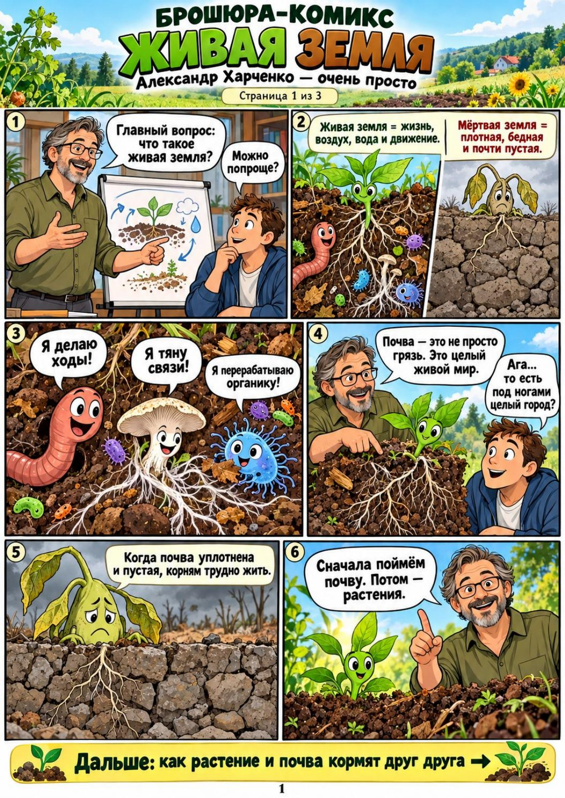
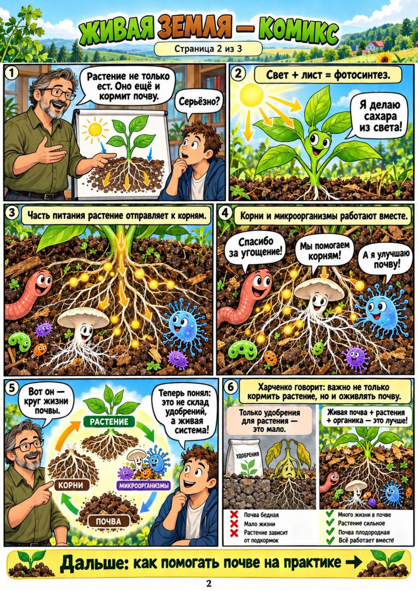
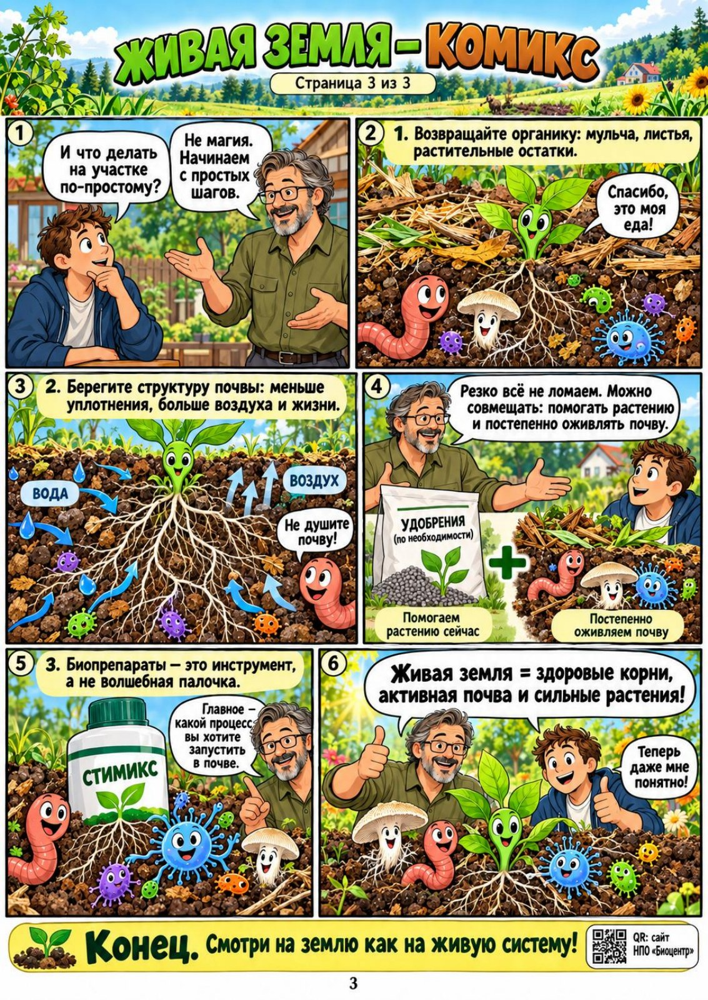

Александр Харченко · Встреча у Татьяны Аникиной (Беланчук) · 04.10.2026
Скачать книгу в PDFПерейти к главе или приложению
Живая земля
Размышления Александра Харченко о почве, растениях и плодородии
Литературная сборка одной большой беседы для личного архива
Дата создания: 05.10.2026 Инициатор: Алексей Сахаров
Источник: «09_Харченко_стенограмма_по_репликам_и_именам.md». В исходном файле указана запись VID_20261004_191613.mp3. Последняя реплика датирована 03:52:45.
Как читать эту рукопись
Книга собрана из автоматической стенограммы встречи. Это изложение мыслей Александра Харченко, его воспоминаний и опыта, прозвучавших в этой беседе. Внешние сведения, научные объяснения и фактчекинг при подготовке не использовались.
Основное повествование ведётся от первого лица там, где авторство подтверждается содержанием и соседними репликами. Вопросы и рассказы собеседниц обозначены отдельно. В местах, где установить говорящего нельзя, использована редакторская связка или подпись «Участник встречи». Текст воспроизводимых роликов вынесен в самостоятельное приложение и не включён в авторскую речь.
Речь литературно собрана: короткие фрагменты соединены в абзацы, сняты бытовые перебивки и механические повторы распознавания. Сохранены существенные повторные обращения к теме, если они добавляют пример, условие или новый поворот мысли. Связки между главами принадлежат редактору; новые биографические обстоятельства и объяснения не добавлены.
Таймкод после абзаца указывает на начало соответствующего фрагмента записи, а не обязательно на каждое слово собранного абзаца. При соединении отдалённых эпизодов стоят несколько таймкодов. Квадратные пометки отмечают повреждённые или предположительно восстановленные слова. Приведённые дозы и числовые результаты сохранены как содержание встречи; неоднозначные записи чисел отмечены рядом и в заключительном перечне.
Содержание
- Пролог. Давайте на базовые вещи
- Глава 1. Две стратегии и одна земля
- Глава 2. Что мы называем плодородием
- Глава 3. Что кушают растения
- Глава 4. Огурцы на дороге: мой первый урок листового питания
- Глава 5. Как я искал микробы
- Глава 6. Накормить лист и оживить землю
- Глава 7. Электрические витамины и длинная весна
- Глава 8. Сахар, азот и вызревание древесины
- Глава 9. Космическая пыль и декоративность
- Глава 10. Сорняки: что они рассказывают о почве
- Глава 11. Почва как желудок. Задача и возможность
- Глава 12. Биометод, биоконтроль и исправление сообществ
- Глава 13. После заморозка, града и болезни
- Глава 14. Торф, гумус и почва, которую можно вырастить
- Глава 15. Органика сверху и снизу
- Глава 16. Питомник и сад: вопросы, на которые нет одной схемы
- Глава 17. Смесь, мера и память садовника
- Глава 18. Люди, обстоятельства и передача опыта
- Эпилог. Я что-то рассказал, что-то зацепилось
- Приложение 1. Характерные цитаты Харченко
- Приложение 2. Ролики и материалы, показанные на встрече
- Приложение 3. Практические ориентиры из беседы
- Приложение 4. Указатель историй, людей и мест
- Что желательно уточнить по оригинальной аудиозаписи
Пролог. Давайте на базовые вещи
«Хорошо, давайте тогда на базовые вещи. Что кушают растения?» [00:00:35]
— Нам бы хотелось сформировать для себя систему ухода и использования ваших препаратов для выращивания и обслуживания декоративных, плодово-ягодных и цветочных растений, — формулирует Евгения общий вопрос. [00:00:00]
Хорошо. Давайте тогда на базовые вещи. Что кушают растения? Второе: что такое живая земля и мёртвая земля?
Я предлагаю посмотреть маленький ролик — ровно две минуты. [00:00:35]
Здесь Александр показывает участникам ускоренную съёмку почвы. В разговоре вокруг экрана появляются червячки, жучки, переработка органики, перемешивание, ходы, воздух. На другом участке органика тоже есть, но её присутствие ещё не означает, что в почве идёт такая же жизнь. Этот показ задаёт два вопроса, к которым беседа будет возвращаться: есть ли пища и есть ли те, кто её перерабатывает. [00:01:16]
Что происходит на самом деле? Переработка, перемешивание. И вот вы посадили растение. Какая у вас там будет земля? Что в ней начнётся?
Нам без разницы, пшеница это, апельсины, розы или трава в вашем ландшафтном дизайне. Мы рассматриваем растение как объект приложения знаний ботаники и биологии. Я показываю яровую пшеницу в тридцати километрах севернее Красноярска, а разговариваем мы о ваших посадках. Потому что общие вещи остаются общими. [00:02:30] [00:04:53]
Вот с них и надо начинать. А потом уже разберём, чего вы хотите: чтобы растения раньше тронулись весной, чтобы не попали под заморозок, чтобы нарастили массу, чтобы древесина вызрела, чтобы цветы были красивее. У препаратов есть определённый функционал, а нам нужно определить задачи. [01:39:28]
Глава 1. Две стратегии и одна земля
«То есть, допустим, мы можем выбрать две стратегии». [00:03:21]
Первая стратегия — химическая. Если взять общую модель сельского хозяйства, она ведь очень простая. Лучший сорт или гибрид. Много-много минеральных удобрений. Хорошая защита с помощью химии. И по возможности полив. Четыре основных идеи. [00:05:42]
В презентации я начинаю эту историю с 1958 года. Один человек предложил модель, потому что, по его подсчётам, в конце шестидесятых — начале семидесятых должны были начаться волны голода: Пакистан, Мексика и так далее. Имя в этом месте записи не сохранилось [неразборчиво]. Он пытался получить урожайность — и получил. Голода удалось избежать. Дальше я называю 1964 год как время принятия этой модели. [00:03:55] [00:05:18] [00:06:35]
И вот она сейчас в сознании сидит у всех, кто занимается выращиванием. Какой новый сорт? Какой гибрид? Какие удобрения сыпем? У кого дороже, у кого дешевле, у кого лучше? Голландия это будет или российский завод? Какая новая химия? Потому что постоянно появляются болячки, постоянно появляются вредители. И полив. Вот основная база — что на полях, что в ландшафтном дизайне. [00:05:53]
Сельскохозяйственная генетика всё время ищет что-нибудь получше: покрасивее, поустойчивее, приспособленнее к северным условиям. Откуда посадочный материал? Из европейского питомника? Из Чехословакии? Из Германии? Сколько стоит? Разговор вращается вокруг генетики. [00:06:43]
Экономику сельского хозяйства я сейчас разбирать не буду. Нас интересует, куда двигаться и какие проблемы тогда были запущены. Посмотрите на почву. Она была из маленьких кусочков, из агрегатиков, а теперь возникают уплотнения. Вода не впитывается — стекает. При вспашке поднимаются огромные глыбы. Показываю Нижегородскую область, Татарстан, [вероятно: Алтайский край]. Говорят: там чернозёмы, там земли! А земля вот в таком состоянии. [00:07:14] [00:07:28]
Мы можем сделать искусственную систему, похожую на гидропонику. Взять материковый материал, который есть, смешать с торфом, добавить [вероятно: доломитовую] муку, подогнать кислотность. Получится искусственно созданная почва, на которой можно выращивать. Но она требует внимания и минерального питания. Не насыпал удобрение — ничего не растёт. И мы оказываемся привязаны к тому, что нужно покупать и вносить. [00:10:27] [00:12:30]
Я называю такую смесь псевдопочвой. Не потому, что на ней невозможно получить растение. Получить-то можно. Вопрос — что в этой системе делает сама земля, а что приходится делать за неё человеку. [00:11:01]
Есть и другой ход. На юге Австралии есть места, где пустыня и узкие полосы степи. Люди научились выращивать в условиях засухи, в том числе восстанавливая почву. Показываю зелёные поля, где нет полива. Я знаю этих людей: муж с женой приезжали в Казахстан, мы там пересекались. Для меня это пример другой стратегии — работы через восстановление самой почвы. [00:13:01]
И тут нельзя просто провозгласить: всё, от удобрений отказались! Если я на поле сразу откажусь, у меня урожай упадёт. Нужно переходить на новую систему, не останавливая производство. Где-то мы ещё работаем минералкой и одновременно восстанавливаем живую составляющую. Это комбинированная стратегия. Ваш ландшафтный дизайн — частный случай тех же технологий. [00:24:22]
Глава 2. Что мы называем плодородием
«Гумус является не причиной, а следствием плодородия почвы». [02:38:19]
Что такое плодородие? У нас накладываются два разных понятия. Когда внесение минеральных удобрений начинают называть поддержанием плодородия, я с этим не согласен. Минеральное удобрение относится к агрохимическому потенциалу урожайности. А плодородие почвы — другой разговор. [00:11:14]
Я сердюсь на этот подход и говорю о законе, об аграрном комитете, об академиках. Смысл моей претензии такой: если крестьянин не вносит удобрения, это ещё не означает, что он не заботится о земле. Нельзя свести заботу о плодородии к тому, сколько он купил и насыпал. [00:11:24]
Есть история российского почвоведения. После проблем с урожаями Вольное экономическое общество собрали деньги и отправили изучать почву человека, который был геологом. Он написал «Российский чернозём», и эта книга легла в основу почвоведения. Начало рассказа в стенограмме потеряно, поэтому имя здесь не восстановлено [неразборчиво]. [00:08:55]
Рядом была другая линия — изучение состояния почвы в зависимости от развития микроорганизмов. В дальнейшем я называю её линией Костычева [вероятно: Костычев]. Книга этого человека вышла на несколько месяцев позже. Потом, после его смерти, сын создал институт в Петербурге; название института запись исказила [неразборчиво]. Для меня существенна сама развилка: смотреть прежде всего на вещество почвы или смотреть ещё и на её живое население. [00:09:15] [00:13:01]
Вот природная почва — такой она должна быть. Без этих уплотнений. Нам надо научиться её делать. На поле, в огороде, под окнами — неважно. Есть общие принципы. Когда воды много, она уходит в глубину, собирается там и не мешает растениям. Когда жарко — начинает подниматься по капиллярам, растения пьют. Мне нужна почва, которая так работает. [00:09:43]
Позже мы возвращаемся к слову soil health — здоровье почвы. Я показываю определение: способность почвы функционировать как живая система, поддерживать жизнедеятельность растений и животных, улучшать качество воды и воздуха. То есть речь идёт о работе целого. [01:24:45] [01:26:52]
К здоровью почвы я привязываю скорость разложения химических веществ, которые в неё попадают. У здоровой почвы этот показатель высокий: она переваривает всякую гадость. Мне нужна земля как желудок, который способен перерабатывать поступающее. [01:28:29] [01:24:38]
— То есть плодородная почва всегда обладает гумусовым горизонтом? — спрашивает Евгения. [02:38:31]
А я начинаю с другого конца. Гумус — следствие. Микробы, когда что-то им сейчас не нужно, прячут свои «сухари» между частичками песка и глины. Так накапливается органическое вещество. [02:38:35]
Ледник уходил — оставались пыль, камушки, грунт. Появлялись первые растения, корни выделяли вещества, рядом поселялись бактерии. Растения кормили микробы, микробы кормили растения. И они начинали накапливать органическое вещество. Шло почвообразование. Нам нужно запустить эти процессы. [02:38:50]
Поэтому я вам предлагаю заниматься выращиванием земли. Не только растения вырастить, а вырастить землю, на которой они будут жить. [01:57:29]
Глава 3. Что кушают растения
«Оказывается, растения обладают способностью питаться органическими веществами, выделяемыми живыми организмами и самими живыми организмами». [00:16:50]
В сороковых годах девятнадцатого века в Германии жил Юстус Либих. В одном месте запись искажает фамилию, но дальше она звучит ясно. Основная идея, как я её пересказываю: растения питаются азотом, фосфором, калием, серой, магнием и несколькими микроэлементами. Отсюда пошли растворы, на которых растения растут, и гидропоника. [00:12:05] [00:14:00]
Теория минерального питания говорит: органические остатки должны разложиться до углекислого газа и минеральных солей. Это минерализация, и после неё растение съест доступное. Всё построено на минерализации. В учебниках — Либих, другой линии вы там не найдёте. [00:14:00]
До него был Альберт [вероятно: Тэер], который говорил, что растения питаются органическими соединениями почвы. Но Либих победил: он показывал опыты. Сделал раствор селитры, суперфосфата, калия — растения растут. Тут вроде бы есть доказательная база, никто не может поспорить с самим опытом. [00:14:22]
Харченко говорит и о профессоре МГУ, который развивал другую теорию питания. В записи имя звучит как «Ярослав Леновский» [неразборчиво: имя и фамилия]. Термин несколько раз распознан по-разному; позднее в беседе ясно появляется «миксотрофное питание». Рассказ о профессоре, о его судьбе и о том, почему эта теория не вошла в учебники, требует возвращения к аудио. Предполагаемая биография не подставлена вместо потерянного фрагмента. [00:14:55] [00:16:00] [01:42:29]
Но сама мысль не осталась только в разговорах. Вы сейчас покупаете препараты с аминокислотами, с гуматами, с гидролизованной органикой. В беседе упоминается фирма [вероятно: Лебозол], препараты из животных отходов и крови. Я видел в [неразборчиво: место] «Доктор Фиш» — питание, которое делают из рыбы. Растения на нём растут. То есть практика давно пользуется тем, что не укладывается в единственную схему «минеральные соли». [00:16:17]
— У нас рыба плавала кверху брюхом, — вспоминает Татьяна. — Александр Генрихович спросил: почему же вы её не собрали на удобрение? А мы увезли на утилизацию. [00:17:12]
Дальше участники обсуждают показанный материал: при посадке рассады в землю кладут рыбу. Реплики вокруг этого фрагмента местами не позволяют отличить голос из ролика от голоса в комнате. Сам показ оставлен как материал встречи, без превращения его текста в авторскую речь. [00:18:50]
Растение способно питаться органическим веществом. А теперь представьте микробную массу в почве. Я называю разные величины: хотя бы пятнадцать тонн на гектар, где-то тридцать. Бактерии, грибы, червяки — живая масса. В среднем, говорю я, она живёт четырнадцать дней. Клетки лопаются, и в почву поступает бульон. Я его называю «куриный бульон». Растение может кушать его корнями. [00:22:19]
Это моя картинка питания. В верхнем слое почвы живые существа появляются, живут, отмирают. Из них непрерывно поступает органическая пища. Если живых существ мало, этого потока мало. Тогда человек идёт в магазин за минеральным питанием. [00:23:17]
В устном расчёте у меня получается около двух тонн такого «бульона» в день. Здесь стенограмма записала «три тонны живой биомассы», тогда как перед этим речь шла о тридцати, а расчёт делался через четырнадцать дней. Число исходной массы надо уточнить [неразборчиво: 3 или 30 тонн]. Важен ход рассуждения: питание идёт не из одного разового внесения, а из непрерывной жизни почвы. [00:23:17]
Сейчас есть много препаратов из гидролизованной органики: ими можно поливать, работать по листу. А детей по учебникам учат, что растение кушает минеральные соли. Я говорю, что практика и на полях, и в ландшафтном дизайне опережает эту картину питания. [00:23:52]
Если мы хотим органическое питание, надо выстроить стратегию, восстанавливающую поступление этого бульона. Если не получается — будем делать химическую модель. Минеральное удобрение насыпал, селитра сразу работает. А живую систему надо запустить, и запускается она медленно. Поэтому ещё раз: нужны переходные, комбинированные стратегии. [00:24:22]
Тут в разговоре появляется анекдот про раввина. Муж приходит — раввин выслушивает и говорит: «Ты прав». Жена приходит — ей тоже: «Ты права». А жена раввина спрашивает: «Как же может быть, что и тот прав, и этот прав?» Он отвечает: «И ты тоже права». Анекдот стоит среди рассуждений о разных объяснениях питания, и я оставляю его именно здесь — как часть живого разговора, а не как готовую формулу примирения всех теорий. [00:15:37]
Глава 4. Огурцы на дороге: мой первый урок листового питания
«Методом ведра. Методом веника». [00:31:25]
У меня была первая практическая история. Я работал сторожем, охранником в лавре. Такой смутный период в карьере: был главным агрономом, потом стал охранником. Бывает. [00:30:30]
Там дедушка подковырял землю сантиметров на семь и посадил семена кабачков и огурцов. Где-то нашёл. Они взошли, стоят жёлтые и не растут. Но он ведь дорогу подковырял! Утрамбованная дорога. Что там должно расти? [00:30:46]
А мне жалко стало. У меня были растворимые удобрения — в записи название звучит как «кемеровские, финские» [вероятно: название удобрения требует уточнения] — и микробы. Принёс немножко. Есть ведро. Есть веник, которым подметают. Развёл и опрыскал огурцы с кабачками. Методом ведра, методом веника. [00:31:12]
Они начали расти. Добавил микробы, стал опрыскивать с микробами — растут. И земля стала разуплотняться. Посмотрел: посадка густая, разрядил. Потом пошёл урожай. Мы ели его там до октября месяца. [00:31:30]
Пятно земли было чуть поменьше этой комнаты. Вообще никакая почва, дорога! А на ней можно вырастить. У меня, по сути, кроме листового питания ничего не было. Для себя я вдруг обнаружил: по листу можно «везти» растения. Они будут красивые, будут расти, а потом ещё можно восстановить почву. [00:31:55]
Мы привыкли считать, что растение надо кормить через корень. Листовая подкормка — что-то факультативное: один-два раза поправили, если чего-то не хватает. А я предлагаю посмотреть иначе. Растения, говорю я, четыреста миллионов лет назад вышли из водной среды. Там они питались всей поверхностью. Поэтому возможность брать питание поверхностью для них исходная. И мы можем листовое питание сделать главным рабочим инструментом. [00:27:55]
Это особенно нужно в переходе. Когда минеральные удобрения кладутся в почву, микробы получают готовые азот, фосфор и калий. Вместо того чтобы добывать их из минеральной матрицы, они ждут, когда им снова принесут. Я выражаю это по-простому: если даёшь халяву, они ничего не делают. [00:28:43]
Перестал вносить — а они ещё будут ждать. Я называю три года ожидания, на четвёртый начинают «думать». Отсюда мой разговор о переходном периоде органического хозяйства: если урожайность сразу падает, хозяйство надо чем-то поддержать. Иначе разорится раньше, чем система заработает. [00:29:10]
Через лист можно поддерживать само растение, пока мы занимаемся землёй. Я привожу соотношения затрат: десять-пятнадцать килограммов азотных удобрений через почву можно заменить килограммом работы по листу. Для калия и фосфора в стенограмме записаны коэффициенты «1,27» и «1,20»; как именно были записаны эти отношения на слайде, нужно уточнить по аудио или презентации. [00:30:06]
А сколько обработок делать? Мало можно, много можно. Это как акселератор, педаль газа на машине. Хочешь быстро ехать — чаще нажимай на педаль. Хочешь, чтобы быстрее росло, — делай больше обработок. В моём первом опыте вопрос решался очень простой техникой, без сложного оборудования. Но именно этот опыт показал мне возможность. [00:32:20]
Глава 5. Как я искал микробы
«То есть у них вот такой синдром рыбака». [00:33:43]
Когда я начал искать препараты, искал и японские. В первый раз мы купили двести пятьдесят литров закваски. Цена в записи звучит как «больше двух тысяч рублей», но единица, к которой она относится, потеряна [неразборчиво]. Нам заявляли восемьдесят микробов, а оказалось — два. [00:32:48]
— HB-101? — спрашивают в разговоре.
Нет, речь об ЭМ. Евгения вспоминает «Восток ЭМ-1», «Байкал ЭМ-1». Я же рассказываю, что когда мы стали ругаться, привезли из Японии запаянные образцы. Посмотрели — восемь микробов. Восьмидесяти там не было. [00:33:13]
Это как рыбак говорит, что поймал во-о-от такую рыбу. Синдром рыбака. Но самое смешное: мои микробиологи, услышав, что японцы сделали восемьдесят, тоже пытались сделать восемьдесят. Когда тебе говорят, что кто-то прыгает на пять метров в высоту, ты, может, пять не прыгнешь, но четыре попытаешься. Хотя тот на самом деле прыгает два. Такое бывает. [00:33:43]
Рассказываю историю японского препарата, сделанного, по моим словам, в 1983 году. Фамилия автора в стенограмме — «Терри Фига» [вероятно: Тэруо Хига; сверить звучание]. Я говорю: он доктор садоводства, а не микробиолог. Из маленького острова, где народ небогатый. Хотел наладить выращивание низкорослых мандаринов. Они растут кустарником, междурядья узкие, трактор туда не заведёшь, землю механически не порыхлишь. Значит, надо сделать препарат, который будет рыхлить землю. [00:34:19]
Что-то мешал, мешал. Надоело, вынес на пустырь, вылил, забыл. Думаю, и в Японии пустыри есть. А потом на том месте вырос огромный лопух. И пришлось вспоминать, что же он туда вылил. Так я пересказываю рождение ЭМ-культуры. В обозначении конкретной культуры запись даёт «Q7» [неразборчиво]. [00:35:13]
Для меня исходная задача здесь — разуплотнение почвы. Мы везли японскую закваску, делали композицию; у нас она идёт как GP, от Japan. В разговоре звучат «Стимикс GP» и «Нива GP» [вероятно: точное название серии]. Эту основу мы соединяем с другими композициями. [00:35:39]
Есть клубы цветоводов Москвы и [вероятно: Магнитогорска]. У одного человека было два участка: свой и родительский. На своём он выращивал саженцы, а ещё было место, где ставил машину. Решил заняться и этим местом: посеял горчицу, она взошла; сидерат заделал, обработал GP. [00:36:23]
На следующую весну, по привычке, ставит туда машину — и она садится на брюхо. Место, которое выдерживало автомобиль, стало рыхлым. Вот такой эффект я и имею в виду, когда говорю о разуплотнении. [00:36:57]
Хорошо, чтобы при работе с микробными препаратами была хотя бы минимальная органика. Но органика — это ещё не обязательно торф. Тут нужно различать пассивный и активный гумус, пищу и материал, который просто создаёт объём. К этому мы ещё вернёмся. [00:37:07]
Мне важно не только внести микробов, а сделать так, чтобы они прижились. На рынке микробных препаратов море. Но, по моему опыту, многие не могут закрепиться. А сложные композиции я использую именно ради способности приживаться и менять землю. [00:43:24]
Девочки рассказывают: раньше копали морковь и мучились, земля была как камень. А сделали шесть-семь некорневых подкормок — почему-то морковь стала копаться легко. Вот это соединение меня и интересует: работаем по листу, поддерживаем растение, а вместе с тем меняется почва. [00:43:48]
Глава 6. Накормить лист и оживить землю
«То есть первая главная вещь — нам нужно вернуть жизнь в почву». [00:40:41]
Когда мы рассматриваем листовые подкормки, нужно помнить о времени усвоения. Азот, говорю я, усваивается за час, магний за пять часов, калий за десять, фосфор — пару дней. Если вы живёте там, где часто выпадают дожди, нужны прилипатели. Раствору надо удержаться на листе, чтобы растение успело его взять. [00:37:29]
В беседе я называю очень маленький расход прилипателя и стоимость тридцать семь рублей на гектар. Но дальше идут «чайная ложка на гектар», «чайная ложка на ведро», «две чайные ложки». Это разные способы описания рабочего раствора, и без объёма воды их нельзя соединить в одну точную норму [неразборчиво: расход прилипателя]. Сама задача понятна: времени нет, погода дождливая, а растение надо обработать. Берём средство, чтобы хоть что-нибудь зацепилось и осталось. [00:37:55]
Есть Геннадий Распопов, его канал. Я рассказываю о нём как о враче, который работает в том числе в Африке и привозит разные идеи. У него компостные чаи. Берёт бочку, рубленую зелень, добавляет компост; всё начинает бурлить, потом процеживает и этим поливает растения. [00:38:52]
— Зелёное удобрение? — спрашивают участники.
Зелёное удобрение в другом нашем разговоре — это выращенное и заделанное растение. А здесь перебродившее, ферментный чай. Но мы можем добавлять свои микробы и делать такие чаи направленными. Можем добавлять разные компосты, подбирать состав. [00:39:37]
Можно делать и [вероятно: бокаши]. В этой части запись несколько раз даёт «бакаши». Я говорю о материале, который заселяют микробами, дают ему переработаться, затем высушивают и вносят в почву. Исходное сырьё в одном предложении распознано как «от рыбы» [неразборчиво: сырьё]. Подробного рецепта в беседе нет, и его здесь нет тоже. [00:40:13]
У нас вопрос технологичности. Какой объект? Можно ли там поставить бочку? Или удобнее привезти пакет бокаши, посыпать? Или привезти компост с микробами? Разные способы, а задача одна — вернуть жизнь в почву. [00:40:27]
Имеет значение, поливаем мы или опрыскиваем. При опрыскивании расход маленький, при поливе большой. В разговоре звучит ориентир: литр препарата на двести литров воды. При промышленном опрыскивании двести литров могут идти на гектар. А если поливать — это двадцать леек, и сколько ими польёшь? Три сотки? Четыре? Это уже другая организация работы. Какой именно препарат относится к этому расчёту, по этой реплике нужно сверить [неразборчиво]. [00:42:28] [00:44:19]
Если время позволяет, можно работать по листу и одновременно делать почву. Часть раствора падает на землю, микробная композиция приживается. Если надо быстрее и есть возможность — проливайте под корень. Если заказчик готов оплатить максимум работ, можно сделать всё по максимуму. А если это городской заказ и денег на зелень мало, я бы делал упор на листовые обработки. Что попадает на газон, тоже участвует в восстановлении земли. [00:44:02] [00:45:02]
На газоне любят собирать скошенную траву в пакеты и увозить. А можно не убирать. Есть деструкторы. Это могут быть те же микробные композиции, только одного из микробов там гораздо больше: в основной композиции три процента, а в стерневой — тридцать. Я называю «Нива Б+30». По моему рассказу, в ней увеличена доля микроба, выделенного из кишечника лошади и перерабатывающего органику. [00:45:32]
Скосили, обработали накануне дождей — через некоторое время скошенная трава исчезает. Но микробам надо прижиться. Не жаркий солнечный день, а пасмурная погода, влажность. У меня в деревне бывает, что из семи дней пять с дождями. Это совсем другая возможность, чем там, где всё высохло. [00:46:06] [00:48:44]
— Получается, «Нива» работает только по скошенному? То, что на корню, не тронет? — уточняет Евгения. [00:49:11]
Нет, не тронет. Я объясняю через энергию ткани: у живой она выше, у мёртвой ниже. Представьте веник, стянутый проволокой. Пока он стянут, его не разорвёшь. Проволока лопнула — и его можно разобрать по одной веточке. Так и мёртвая ткань становится доступной. Сапрофиты питаются мёртвой тканью. [00:49:19]
— А что остаётся после зимы? У нас длинный зимний период, — спрашивает Евгения. [00:49:56]
Есть накопительный эффект: на участках, с которыми мы работаем, рост урожайности идёт за три-четыре года. Но у вас большие зимы, и весной, говорю я, минимум месяц микробная работа ещё не включена — почва «морозом простерилизована». Что бы я сделал? Пролил разведённым препаратом либо приготовил микробный компост, который зимой не промерзал, хранился в подвале, хоть в мешках. Можно и бокаши. [00:50:16]
Весной просто рассыпать. Если лень заграбливать — под пасмурную погоду, под дождик. Взяли мешок, наполнили вёдра, прошли по приствольным кругам, клумбам, «посолили». Желательно под дождь или с заделкой граблями. Я рассчитываю таким образом включить почву на месяц, даже на полтора раньше. [00:50:58]
По температуре я называю пять градусов для бактериальных препаратов; потом говорю, что некоторые композиции могут работать и при плюс двух, плюс одном. Вопрос, температура это почвы, воздуха или среднесуточная, в беседе поднимался, но общего ясного ответа не получил. Эта граница остаётся для уточнения. [00:51:19]
Минералка не разуплотняет почву — Евгения это сама отмечает. А микробы будут работать с ней. Как именно лучше организовать внесение на вашем объекте, надо пробовать, руку набить. На огородах мы это делаем; ваш случай — ландшафтный дизайн. Растения другие, но сам вопрос остаётся. [00:52:29]
Глава 7. Электрические витамины и длинная весна
«Взял, капнул, полил или опрыскивал». [00:42:28]
Я говорю, что мы используем биологию, химию и физику. И придумали, как использовать нужную физику. В разговоре я называю это «электрическими витаминами для растений». [00:27:44] [00:38:46]
Один из параметров — окислительно-восстановительный, или редокс-потенциал. Вода бывает разная: плюс двести, плюс четыреста, плюс семьдесят, бывает и минусовая. Поэтому, когда называю расход «Стимикса Стандарт» на воду, оговариваю: смотря какая вода. Я хочу получить отрицательный потенциал, говорю о минус двухстах милливольтах. [00:40:56]
В 2016 году я выступал на съезде почвоведов в Белгороде. Встаёт одна пожилая женщина и рассказывает: в семидесятые годы были исследования редокс-потенциала. Оказалось, что весной короткое время вода под растениями имеет минус двести, минус триста милливольт. [00:41:23]
Весной всё начинает расти с огромной скоростью, прямо на глазах, аж шум стоит. Я связываю этот весенний разгон с изменением физики воды. И когда мы добавляли в питательные составы для опрыскивания препарат, меняющий эту физику, получили возможность поддерживать рост с весны до октября, пока остаются плюсовые температуры. [00:41:45]
Вот почему я говорю об условиях «вечной весны». Не просто дать растению вещество, а создать состояние среды, в котором оно хочет расти. «Стимикс Стандарт», по моему объяснению, меняет ОВП. Кратность обработок позволяет этим пользоваться. [01:48:56]
На встрече показан отдельный ролик об ОВП воды и внутренней среды организма. Его диктор говорит о человеческом организме, молоке, околоплодных водах и старении. Это голос ролика, а не Харченко. В авторское объяснение здесь включён только последующий комментарий о препарате и условиях роста растений. [01:46:32]
Есть несколько разных ограничений. На одних участках первое — вода. На других — питание. Где-то свет. В германской и особенно голландской модели много внимания минеральному питанию: дожди идут, вода есть, остаётся кормить. Я упоминаю институт, название которого запись даёт как «Фогенинген» [вероятно: Вагенинген; сверить]. У них своя культура выращивания цветов, сложное питание, многократные внесения. [00:53:05]
А я по большей части работаю там, где первое ограничение — вода. Минеральное питание для меня вторично. У вас летом свет есть, почти белые ночи. Но весной света может не хватать. «Стимикс Стандарт», по нашему опыту, работает и при недостатке света. [00:53:52]
В Московской области мы специально делали эксперимент с комнатными растениями: в декабре они не уходили в покой, а росли дома. Обычно света не хватает, за день растение не набирает того, что ему нужно на жизнь, и старается уменьшить расход накопленного. Мы же пробовали поддержать рост при таком свете. [00:54:22]
Есть и недостаток тепла. В беседе я называю препарат БН, а позже звучат БМ, БМК. Эти обозначения нельзя молча свести к одному: точную маркировку надо проверить [неразборчиво: БН/БМ/БМК]. Я описываю его как средство, стимулирующее растение при низких температурах, снижающее «биологический ноль». [00:55:01]
У ребят в [вероятно: Сергиевом Посаде] при погоде, похожей на вашу нынешнюю, росли огурцы. Я приезжал за неделю до встречи, они ели свои огурцы. Можно сидеть и говорить: май прохладный, дождёмся тепла. А можно попробовать обработку и поддержать рост. [00:55:19]
Ещё есть «незамерзайка». Я называю её сложным пятнадцатимикробным препаратом. В одном месте базовая основа записана как «Фитостим Д», в другом как «Фитостим Б» — букву нужно уточнить. Один микроб при понижении температуры выделяет глицерин. Я рассказываю о кратковременных заморозках до минус семи; цветоводы Москвы делали смеси и для минус девяти. [00:55:55] [01:40:18]
В 2024 году было холодно, десять дней словно зима вернулась. Цветоводы поддерживали растения, не дали им погибнуть. Это я привожу как опыт применения, а не как отвлечённую цифру. [00:56:28]
Но здесь есть ограничения. Препаратом, который в этом месте назван БМК, нельзя работать по крестоцветным: они «сходят с ума», начинают вести себя ненормально. Почему — я говорю, что не знаю. В разговоре перечисляют капусту, рапс, руколу, декоративную капусту. [00:57:05]
Первую обработку перед заморозком желательно делать хотя бы за сутки. Если обработать в день заморозка, микроб может не успеть прижиться. Участники приводят и свой случай: обработали утром по прогнозу, а потом выпал снег сантиметров двадцать. Но сроки и состав именно того опыта нужно сверить по голосам записи. [00:58:34]
— «Незамерзайка» только весной или можно осенью? — спрашивает Алёна. [01:40:08]
Можно осенью. А если осталась, можно использовать её и летом как базовый «Фитостим» — в этой части я называю букву Б. [01:40:18]
В Красноярском крае у меня задача — вырастить большой урожай сои. Есть два заморозка, в которые она попадает: один в начале сезона [неразборчиво: месяц], второй в конце августа. Закрыли оба — получили полтора месяца дополнительной вегетации. Теперь ищем более поздние сорта. Вот уже не просто спасли листья: изменилась возможность построить технологию. [01:40:29]
Для севера это особенно существенно. Евгения рассказывает о Берёзово: поздний сход снега, затем резкий скачок температуры, а в первой декаде августа ночи уже холодные, вплоть до заморозков. С середины августа фактически осень. Дёрен, который у них даёт сорок сантиметров прироста, там даст в лучшем случае пятнадцать. Пион молочноцветковый цветёт в конце июля — августе, хотя у них в конце мая — июне. [02:02:44]
Я возвращаюсь к тому, что растение выделяет сахара корнями, вокруг них поселяются микробы. Весной мы можем стимулировать этот поток и включать взаимодействие раньше. В беседе звучит ориентир конца апреля — начала мая для Тюмени, но северный календарь надо подбирать отдельно, по фактическим условиям. Евгения как раз и объясняет, почему одной календарной даты для всех нет. [02:00:40]
Глава 8. Сахар, азот и вызревание древесины
«Нам просто нужно раскачать на сахаре и поддерживать его высоким уровнем». [01:41:59]
— Как этот взрывной рост довести до высокой зимостойкости? — спрашивает Евгения. — Чтобы прирост к октябрю одревеснел. [01:05:31]
Вот тут надо поговорить об азоте и фотосинтезе. Нам говорят: азот стимулирует рост, обязательно нужен азот. А я обращаю внимание, что выросшее на азоте бывает несладким. Мне попадалась кандидатская работа об особенностях фотосинтетической деятельности сортов [вероятно: озимой] пшеницы. Красивые зелёные растения, удобренные селитрой, а фотосинтез начинает тормозиться. [01:05:54]
Как я это объясняю? Когда есть нитратный азот, растение относится к нему как Винни-Пух к мёду. Только что мёд был — а уже его нет. Растение хватает нитрат, особенно где дожди, и прячет внутри листа. Меняется pH, среда становится кислой. У ферментов свой pH; в этой среде включается инвертаза. Она расщепляет сахарозу на глюкозу и фруктозу. [01:06:45]
Я спрашиваю: сколько сахара можно растворить в стакане воды? Участники называют свои варианты. А я говорю: четыре стакана сахара. Дальше объясняю через мёд: свежий жидкий мёд, потом он «садится». В моём устном объяснении это иллюстрация различия сахарозы и глюкозы, их растворимости и работы фермента. [01:07:38]
Внутри растения, говорю я, транспорт сахаров идёт в форме сахарозы. Когда появляется глюкоза, сосуды, по которым идёт отток, начинают закрываться, фотосинтез блокируется. Поэтому задача — обеспечить отток сахаров. И я спрашиваю собеседников: какие способы? [01:08:43]
Один путь — блокировать инвертазу. Другой — помочь переработать нитратный азот. Я упоминаю фосфор и два микроэлемента; запись даёт слитное «марганецил, мариндент» [вероятно: марганец и молибден]. Эти названия надо сверить, прежде чем превращать их в точный состав. [01:10:18]
Ещё в разговоре появляется аспирин, кардиомагнил — как пример вещества, которым, по моим словам, пользуются в сельском хозяйстве Краснодарского края. Я называю его в связи с «разжижением раствора». Дозировки и самостоятельной схемы такого применения здесь не даю. Это часть рассуждения о возможных рычагах, а не законченный рецепт. [01:09:40]
— А если увеличить количество сахарозы? — спрашивает Евгения. [01:10:03]
Своя сахароза у растения есть. Нам надо любым путём решить задачу, чтобы сахара было больше и он нормально двигался. Можно взять карбамид вместо селитры и работать по листу. В моей схеме это один из выходов из конфликта: азот нужен для синтеза белка, а накопленный нитрат мешает тому процессу, который я хочу усилить. [01:10:07] [01:11:02]
Но нужен хороший карбамид. При нарушении условий изготовления в нём может быть [вероятно: биурет] — запись чаще даёт «биорет». Я говорю, что он действует как слабый гербицид. Поэтому карбамид надо проверить по листу: даёт ожог или нет. [01:11:26]
Я предлагаю иметь сульфат магния. Он продаётся в цветочных и дачных магазинах, в аптеке под названием «горькая английская соль». В разговоре я упоминаю завод магниевых удобрений в области, название которой распознано как «Жереборгская» [неразборчиво]. Называю соотношение: килограмм сульфата магния на пять килограммов карбамида. А запись бытовой меры «1,3 столовых ложки на десять литров» неоднозначна: один-три или одна целая три десятых — надо слушать. [01:11:48]
И ещё у меня есть препарат, который мы пока называем «Синенький». Он синего цвета, другого названия не придумали; следующее описание цвета в записи противоречит этому [неразборчиво]. Пахнет аммиаком. В разговоре звучит одна-две чайные ложки на десять литров воды. Я говорю, что он закрепляется в листе и его не нужно применять так часто. [01:12:49]
Что обнаружили ребята? Зелёный, не одревесневший прирост обработали «Синеньким» — примерно через две недели идёт интенсивное одревеснение. Как там всё происходит — я предлагаю подумать, но сам эффект мы наблюдали. Если надо быстрое вызревание древесины, «Синенький» вам в помощь. Можно с «космической пылью», в пасмурную погоду с прилипателем. [01:13:32]
Я говорю и о будущем названии, которое стенограмма записала как «ЕПА-10МС» [неразборчиво: обозначение]. Обсуждаю, что оформлять его буду как прилипатель, потому что иначе трудно зарегистрировать. В этой части называю расход сто граммов на гектар для больших опрыскиваний. Его соотношение с чайными ложками и конкретной формой препарата нужно уточнить. [01:14:02]
Позже Алёна спрашивает о черенковании. Ей нужен не просто длинный зелёный побег. Надо, чтобы черенок быстро нарос, а потом его можно было срезать: внутри должна быть беленькая серединка, ткань должна созреть. В разговоре ответ сводится к микроэлементам и «Синенькому», но распределение голосов там ненадёжно. Этот вывод лучше оставить как ответ беседы, а не как дословную мою реплику. [02:13:39]
Евгения пробует сформулировать схему: во второй половине лета сменить процесс роста на процесс вызревания. Я отвечаю: можно и совместить. При нужном редокс-потенциале и нормальном оттоке сахаров «и вершки, и корешки, и вызревание всё идёт вместе». А если в определённые моменты добавить «Синенький» и «космическую пыль», можно поддержать вызревание отдельно. [02:12:52]
Сахар падает после холодных ночей, похолодания, заморозков, других климатических ударов. После обработки, по нашим наблюдениям, через день-два опять начинает расти. Надо его раскачать и поддерживать. Для этого либо повышать скорость переработки нитрата, либо менять форму листового азотного питания. А когда почва заработает и растение начнёт получать органическое питание из микробной массы, это уже будет другой азот и другое поведение растения. [01:41:23]
Я видел такую разницу ещё в 2002 году. В теплице обрабатывал растения вытяжкой из калифорнийского червя — белковая масса. Помидоры совершенно по-другому росли. Я знал, как они растут на минералке, и увидел, как растут на этом питании. Вот такие наблюдения и заставляют меня возвращаться к самому вопросу: что растение кушает? [01:42:47]
Глава 9. Космическая пыль и декоративность
«И можно скорость нарастания массы регулировать кратностью обработок». [01:04:59]
Для вас декоративность — не побочная вещь. Вам важно, как выглядит лист, насколько крупный цветок, сколько времени растение цветёт. У меня были задачи в другом растениеводстве, но решения могут пригодиться и здесь. [01:04:16] [01:41:12]
Мы решали задачу по винограду. Удалось увеличить урожайность в три раза — в записи именно слово об урожайности сильно искажено, но таков ближайший смысл [вероятно: урожайность]. Я боялся, что потеряем качество: виноградный сок есть, а хорошее вино не сделаешь. Тогда использовали сложный препарат с тридцатью пятью элементами таблицы Менделеева, который назвали «космической пылью». [01:02:21]
История такая. Один человек в Обнинске изучал места падения метеоритов, метеоритных дождей. Замечал, что там растительность начинает расти с огромной скоростью. Делал анализы почвы, нашёл соотношение элементов, в девяностых создал препарат. Была фирма, продавала его. [01:03:00]
Потом начались регистрации. С него брали деньги, морочили голову, а дальше говорили: у нас нет предельно допустимых концентраций на многие элементы вашего состава. В одном месте я называю 1998 год, в другом запись даёт «или 90-й» [неразборчиво: год]. У него случился инфаркт, он умер. Жена ушла в монастырь. Я брал у неё образцы, и по образцам мы установили формулу. [01:03:28]
Вот один путь, по которому препарат ко мне пришёл. Имени человека в этой части нет, и я его не добавляю. Но сама история для меня важна: работа была сделана, потом едва не потерялась, и пришлось восстанавливать по тому, что осталось. [01:03:50]
Есть и другой мой след — аквариумы. В четырнадцать лет я занимался аквариумами и аквариумными растениями. В журнале, название которого распознано как «Рабоводство. Рабоводство» [вероятно: журнал о рыбоводстве], за 1973 или 1974 год была статья о подобном препарате. Точное название журнала и саму статью надо найти по оригинальной речи. [01:04:00]
Потом я обратил внимание: даже работа по листу с очень маленьким расходом даёт сильную декоративность. Лист становится многоцветным: сверху зелёный, снизу фиолетовый. Микроэлементы обеспечивают цветение. Когда соединяем физику раствора, микробы, NPK и «космическую пыль», получается та декоративность, которая вас интересует. [01:04:16]
Скорость нарастания массы в первую очередь регулируется кратностью обработок. Была у меня ещё задумка с азотофиксирующим микробом, который давал много гиббереллина. Деревья давали прирост по полтора метра. Мне в моей задаче это было не нужно. Но возможность есть, и на «Стандарте», говорю я, можно получить большой прирост. Только сразу возникает следующий вопрос — вызреет ли он к зиме. [01:04:59]
В разговоре мы смотрим на яблони и цветы. Участники рассказывают, что бледно-розовая яблоня стала малиновой. Я связываю изменение окраски на некоторых сортах с включением генов, но термин в этой реплике распознан плохо [неразборчиво]. Не вся эта история принадлежит мне: часть — наблюдения людей в комнате. [00:59:30]
Татьяна приносит или показывает колокольчик, цветущий 4 октября. Обсуждаем сроки обработки: по бутонам, по цветам, для декоративности, перед заморозками. Названия препаратов в этом разговоре путаются между БН, БМ, НФ и «Стандартом». Из него можно сохранить задачу и наблюдение, но нельзя сделать единственный точный рецепт. [00:59:44]
Топинамбур тоже можно сделать прекрасным декоративным растением. Он родственник подсолнечника. Представляете стену растущего, цветущего топинамбура? Евгения рассказывает, что у них он зацвёл в сентябре. В разговоре упоминают и цветение с июля. Я думаю, там надо давать ещё микроэлементы. [01:01:44]
Четыре обработки фестивальной площадки
В середине встречи разговор становится совсем предметным. Евгения спрашивает Татьяну, сколько раз та обработала площадку фестиваля. Четыре. [01:43:50]
— Первый раз — «Стандарт». Второй — GP. Третий — GP со «Стандартом», просто GP осталось мало, решила совместить. Один коричневый, другой светленький, ну думаю, посмотрю, что будет. Четвёртый раз — GP с «незамерзайкой», — рассказывает Татьяна. [01:44:03]
Евгения отмечает результат, который отследила сама: цветок на котовнике стал почти вдвое крупнее. Обычно видишь общее цветение и не рассматриваешь отдельные цветочки. А тут идёшь — и каждый цветок на соцветии заметен. И цвет другой. [01:44:44]
Шалфеи, от которых уже не ждали новой волны, снова цвели с августа до времени встречи. Алёна сравнивает декоративную яблоню с посадочным материалом, который видела в Челябинске: здесь лист насыщеннее, междоузлия короче, растение словно «набитое». Это её сравнение, а не мой подсчёт. Имя питомниковода в её рассказе повреждено [неразборчиво]. [01:45:24]
Позже Татьяна уточняет ещё одну деталь: GP, которым она работала на фестивале, был из запаса, закупленного несколько лет назад. Условия хранения она описывает отдельно. Она сама не берётся точно разделить, от чего цветок стал крупнее, но сохраняет наблюдение. Такая осторожность в рассказе тоже нужна. [02:26:59]
Не всякий опыт даёт яркую картину. Ближе к концу Татьяна вспоминает двух цветоводов, которые особого эффекта не увидели и не заинтересовались. Она предполагает, что дело могло быть в торфянике, но это её предположение. Этот случай тоже остаётся в книге: встреча состоит не только из рассказов о впечатляющем результате. [03:05:50]
Глава 10. Сорняки: что они рассказывают о почве
«Самое главное, чтобы питательные вещества не болтались в почве». [01:20:32]
— Мы накормили те растения, которые хотим вырастить. А как быть с сорняками? — спрашивает Алёна. [01:17:57]
Тяжёлый случай. Сначала я рассказываю историю одного человека из Тобольска. Имя в этом фрагменте не названо ясно [неразборчиво]. Жена хотела быть дворянкой, велела купить имение. Он покупал разорённое, приводил сельское хозяйство в порядок, продавал, потом брал следующее. Я говорю, что так они сменили около девяти поместий. [01:18:10]
Крестьяне приходили, смотрели на рожь и ячмень: урожаи в два-три раза больше их собственных. Спрашивали: «Как ты это делаешь, барин?» А барин подробно рассказывал. Они выслушивали, кивали, шли домой и говорили между собой: «Барин слово знает». [01:18:49]
Так вот, слова от сорняка мы ещё не придумали. Но есть закономерности. По моему объяснению, в восстановленной почве, где процессы собраны, сорняков становится меньше. Семена просыпаются, когда есть питательные вещества, которые оказались не у дел, болтаются в почве. Чтобы они не потерялись и не накопились в нежелательной дозе, живая составляющая почвы «будит» сорняки: пусть схватят и удержат. [01:19:17]
Я привожу технологии из Аргентины и США: в зиму специально сажают растения, которые успевают взойти, немного подрасти и забрать свободное питание. Тогда весной сорняки не получают такого толчка. Главное, чтобы питание не болталось. Как приложить это к вашему ландшафтному дизайну — надо думать отдельно. [01:20:12]
Есть и обычные средства — механическая обработка, гербициды для питомников. В записи звучит название «ладрен» [неразборчиво: препарат]. Но Алёна возражает: во многих питомниках отказались от гербицидов на маточных полях. Через три-четыре года маточники тормозятся в развитии, не растут. [01:20:45]
Я отвечаю, что надо работать с биологией, усиливать биологическую активность: микробы будут перерабатывать остатки гербицидов. А ещё можно завозить «гербициды из Средней Азии» — и будут полоть. Тут уже шутка про людей, которые выполняют ручную прополку. Она потом возвращается в разговоре как «гербициды из Узбекистана». [01:21:12] [03:08:43]
Видел я, как в [вероятно: Ферганской долине] пропалывают хлопчатник. Каждую травинку собирают в фартук. Идут с поля, несут траву домой животным. Сколько напололи — столько и будет корма. Население густое, люди держат скот, и сорняк оказывается не только помехой, а частью хозяйства. Географическое название в стенограмме повреждено, поэтому его надо сверить. [01:21:40]
Евгения говорит о другой стороне: сейчас культурные растения реагируют даже на разрешённые гербициды избирательного действия. Газон обработали, а рядом страдают посадки. [01:22:18]
Мой ответ: низкая биологическая активность почвы, компоненты медленно разлагаются. Почва убитая. И ещё мы раскидываем минеральное питание, оставляем в земле несбалансированные питательные вещества. Сами минеральные удобрения, по моей логике, провоцируют сорняки. [01:22:38]
— Сейчас есть сад, где после разрешённого гербицида скрутились почки, побеги живы, но вегетация остановилась. Как восстановить весной? И как они перезимуют? — спрашивает Евгения. [01:23:04]
В ответе беседы звучит: «Стандарт» с японской GP-композицией и минералкой по листу — если перезимуют. Это «если» существенно. Здесь никто не установил, что растения обязательно благополучно выйдут из зимы. Сначала они должны её пережить, потом будет работа с восстановлением. [01:23:44]
К концу встречи участницы снова обсуждают маточные поля, регулярную культивацию междурядий, скашивание и последующую обработку «Нивой». Уточняют последовательность: сначала убрать или повредить сорную растительность, потом работать с мёртвыми остатками. «Нива» в их разговоре — деструктор, а не средство, которое должно убить живой росток. [03:08:50]
Евгения добавляет своё наблюдение о выборе срока прополки по фазам Луны. Это реплика Евгении, не моя технология. Оставляю её как след живого обсуждения практики, без достраивания схемы, которую в этой встрече никто подробно не изложил. [03:10:03]
В конце показывают учебный ролик о сорняках и почвенной пищевой сети. Там диктор объясняет их поведение через формы азота и работу разных групп организмов. Этот материал отдельно отмечен в приложении. Он созвучен направлению нашего разговора, но нельзя подставить слова диктора вместо моего объяснения. [03:47:50]
Глава 11. Почва как желудок. Задача и возможность
«Потому что, я говорил, всё зависит от постановки технической задачи». [01:32:29]
У меня была история на границе Тверской и Псковской областей. Огромный склад боеприпасов взорвался, я говорю: года два назад. Человек рассказывает, что после этого у него ничего не росло, огород замер. Что именно там выпало, какой состав взрывчатых веществ — я не знаю и так и говорю. [01:23:55]
Он применял биологию. Через некоторое время всё снова ожило. Для меня этот рассказ — ещё один повод сказать: нам нужна почва как желудок, способный переварить то, что в неё попало. [01:24:26]
Когда я начинаю говорить о здоровье почвы, разговор быстро уходит дальше земледелия. Я утверждаю, что микробные системы могут работать и с тяжёлыми металлами, переводить их в другие соединения. Затем называю ещё одну тему — трансмутацию химических элементов в биологических системах. В моём объяснении микроорганизмы могут получить нужный элемент из другого: привожу железо и марганец, радиоактивный стронций и [вероятно: барий]. [01:28:40]
Это утверждения Харченко в данной беседе. Развёрнутое описание экспериментов здесь не приводится. Он вспоминает конференцию в Южной Корее в 2019 году, физиков МГУ, попытки обратиться к организации в Москве. Название организации и точное описание технологии запись не сохранила [неразборчиво]. [01:29:31] [01:30:41]
Участники начинают обсуждать Чернобыль, Челябинскую область, Белоярскую АЭС, захоронения на севере. Даты и места в этом обмене смешиваются. Их нельзя без аудио собрать в одну достоверно произнесённую историю; подробные спорные названия вынесены в перечень уточнений. Но поворот разговора существенен: слушатели спрашивают, можно ли решить совершенно другую, большую задачу тем же кругом возможностей. [01:29:31] [01:30:10] [01:37:32]
Я объясняю, что собрал людей из разных областей науки, плачу им зарплату. В том числе человек из этой группы работает у меня химиком. Есть специалисты, с которыми можно разговаривать о таких задачах. Но найти специалиста — ещё не значит получить работающую программу. [01:31:05]
Мне периодически говорят: надо решить вот это. Например, надо сделать, чтобы помещение не пахло; конкретный источник запаха здесь плохо распознан [неразборчиво]. И я всегда возвращаюсь к постановке технической задачи. [01:31:55]
Рассказываю анекдот. Девочка поймала золотую рыбку. Та обещает исполнить три желания. Девочка просит, чтобы из носа росли рыжие волосы, чтобы были уши как у ослика [вероятно: формулировка второго желания] и полные карманы конфет. Рыбка исполнила, а потом спрашивает: почему же ты не захотела стать умной, красивой и здоровой? «А что, можно было?» [01:32:29]
Вот так и с задачами. Надо понять, чего хотите, что реально требуется, а потом уже договариваться, доводить до внедрения. Не ожидать, что всё случится само, бесплатно и по одному упоминанию возможности. [01:33:10]
Я много задач решал. Некоторые решали изящно, а нам не заплатили — потом мы с этими людьми работать не хотим. Научная возможность, техническая задача, деньги и люди должны встретиться. Иначе можно долго обсуждать, что в принципе существует такой метод. [01:33:50]
Мы возвращаемся к растениям. Сегодня я разбираю функционал препаратов и ваши задачи: начать рост раньше, не потерять его на заморозках, выиграть вегетацию, получить вызревший прирост, увеличить декоративность. Про захоронения можно разговаривать отдельно. Если кому-то действительно понадобится, познакомлю с физиками. Но это другая работа. [01:37:49] [01:39:04]
Мёд и дети, которых потеряли
Среди этих рассуждений есть маленькая история, которую мне рассказали. К пчеловодам приехали дети из города. Рядом цвела лекарственная валериана, пчёлы собирали с неё нектар. Детей угостили чаем с мёдом, а потом дети исчезли. Стали искать — нашли в машине, спят. Я рассказываю это как случай с успокаивающим мёдом. По моим словам, его потом несколько лет закупали, пока поле не перепахали. Это чужая история в моём пересказе, а не мой собственный опыт с детьми. [01:25:38]
Вот так разговор и идёт: от почвы к тому, что на ней выросло, от растения к человеку, от наблюдения к задаче. Но каждую новую задачу всё равно приходится ставить отдельно. [01:26:07] [01:32:29]
Глава 12. Биометод, биоконтроль и исправление сообществ
«Коррекция — это значит исправление микробных сообществ». [01:55:49]
— Мучнистая роса — страх всех садовников, — говорит Евгения. — В этом году мы столько фунгицидами никогда не обрабатывали. Обычно хватало двух обработок. [01:51:23]
Здесь надо различать способы работы. Я начинаю с биометода: найти биологический препарат, который заменит химический. В восьмидесятые годы, когда химией стали много пользоваться, такая задача была очень популярна. [01:54:26]
Я называю результаты биометода: от минус пяти процентов прибавки до плюс пятнадцати. И высказываю свою претензию: можно найти препарат, заменяющий химию, но при длительной работе микробный мир меняется, и это решение не удерживает систему. В беседе я выражаюсь резко. Смысл моей критики — в попытке заменить один препарат другим, не исправив само сообщество. [01:54:26]
Мы запустили другой уровень — биоконтроль. Химия зачищает территорию, биология её заселяет. А кто нам запретил? Почему мы не имеем права так работать? Обработали, убрали патоген, заселили освободившуюся территорию. [01:55:15]
Здесь я называю прибавки от сорока до двухсот пятидесяти процентов. Эти цифры прозвучали как общий диапазон опыта; названия культур, контроль и условия для каждого результата в данной реплике не перечислены. Они остаются цифрами моего рассказа, а не таблицей одного конкретного опыта. [01:55:41]
Татьяна вспоминает сравнение, которое слышала от меня накануне: биометод — едешь на велосипеде; если грамотно совместить химию и биологию — пересаживаешься на скоростную машину, на «Мерседес». В этой записи сравнение пересказывает Татьяна, и я не делаю из него дословную собственную цитату. [01:52:06]
— На первоначальном этапе три года, пока не выведешь… — начинает она.
Может, три. Может, четыре. Сколько надо. Мы не назначаем срок только потому, что красиво выглядит число. [01:52:58]
Евгения добавляет: мы не под куполом, не в безвоздушной среде. Сезон повышает бактериальный и грибной фон повсюду. Из леса понеслась ржавчина — и весь газон в ржавчине. Это её практический вопрос к любому обещанию, что участок однажды заселили и забыли. [01:53:09]
Татьяна рассказывает о своём участке: третий год работает препаратами, обрабатывает, когда есть возможность. Мучнистую росу давно не вспоминает. Евгения сразу спрашивает о барбарисах — не убрали ли их? Нет, барбарисы есть, показывают в окно. Так обсуждение удерживается на реальном саде: что оставили, что изменили, что видят сейчас. [01:53:30]
Мой следующий уровень — коррекция микробных ценозов. Исправление сообществ. Волнами работаем, обрабатываем растительные остатки, применяем микробные композиции, бокаши. Они начинают выдавливать плесневые грибы, которые накопились в результате ломки природного микробного сообщества. [01:55:49]
Тогда болячки начинают уходить сами. А мы всё равно смотрим: надо — работаем, не надо — не работаем. Количество химических обработок можно значительно уменьшать по состоянию системы. [01:56:05]
Отдельно говорим о мучнистой росе: в ответе звучит сочетание «Стандарт», GP и подходящего фунгицида. Но не указаны точное средство, культура и состав общей баковой смеси. Поэтому здесь сохранён принцип сочетания, без придуманной единой инструкции. [01:51:41]
Есть ещё уровень устойчивых ценозов. Я долго думал, что можно сделать для севера. Встреча касается этой темы, но полного устройства такой технологии я не излагаю. Говорю о необходимости освоить уже разобранный уровень, а затем переходить дальше. [01:57:43]
Мы обнаруживали и скрытые способности самих растений. Например, после нескольких обработок картофеля «Стандартом» на листе появлялся мелкий коричневатый пушок. Я связываю это с экспрессией генов. Колорадский жук, по моему наблюдению, такие растения обходил. [00:26:29]
В одном раннем предложении автоматическая запись даёт «очень любит есть такой лист», хотя до и после говорится, что жук не ест его. Это место требует уточнения отрицания. Позже мы смотрим увеличенную фотографию иголочек, пушка, и снова звучит: колорадский жук не ест. Поэтому история сохранена в этой логике, а противоречие вынесено в перечень проверки. [00:26:44] [01:58:19]
Мой интерес здесь не в том, чтобы найти ещё одну замену инсектициду. Есть способности, которые на одном типе питания не проявляются, а на другом начинают проявляться. Растение ведёт себя иначе. И это для меня ещё одна причина смотреть одновременно на питание, микробы и состояние среды. [00:26:57]
Глава 13. После заморозка, града и болезни
«То есть мне нужно их заставить, чтобы захотели жить». [01:49:53]
— Как часто вы проводите обработку? Раз в две недели? Раз в месяц? Каждый день? — спрашивает Алёна. [01:49:23]
Вообще руку набьёте. Вот я приезжаю к человеку в Крым. К октябрю у него огурцы почти дохлые, плети еле живые, помидоры полуживые. Обрабатываю один раз. Потом беру фунгицид, [вероятно: стробилурины], убираю мучнистую росу. Через три дня ещё обработка, потом через пять. [01:49:30]
Мне надо, чтобы они захотели жить. После этого можно работать раз в неделю, раз в десять дней, раз в пятнадцать — сколько вегетации осталось. Если с весны начинаем, интервалы могут быть от пяти до пятнадцати-двадцати дней. Если растение в застое, в стрессе, сначала несколько обработок, чтобы его раскачать. [01:49:53]
Потом уже смотрите практически и организационно: когда есть время, как удобнее. Обрабатывать без яркого солнца. Алёна говорит, что обычно работают вечером, ночью. Я предлагаю посмотреть технику «Штиль», возможность делать туман, который осядет на участке. Это предложение попробовать способ нанесения, а не готовая инструкция для конкретной модели аппарата. [01:50:26]
Мне хочется показать вам функционал. Я не ландшафтник; в записи это слово сильно испорчено, но дальше я объясняю, что мои девочки в клубе цветоводов Москвы — в основном цветоводы-огородники. У них свой опыт, у вас свои объекты, и вам надо освоить возможности в своей работе. [01:51:10]
Картофель после града
Показываем материал с датой 9 июня: прошло два дня после града, лечат картофель. Через некоторое время смотрим восстановившиеся посадки. Участники спрашивают, сколько прошло. В разговоре звучит две недели. Я называю скорость роста семь с половиной сантиметров в сутки. [02:04:21] [02:06:25]
— Какой препарат?
В разговоре называют «Стандарт» с азотом, карбамид; я уточняю, что, вероятно, там была КАС, [вероятно: карбамидно-аммиачная смесь]. Обработки раз в три-четыре дня. Где заканчивается подпись к показываемому материалу и начинается комментарий в комнате, нужно сверить по аудио, но общий ход опыта виден: сначала сильно повреждённое растение, потом ускоренное отрастание. [02:06:39]
— Но наша цель не зелёный куст. А клубни? Они тоже будут расти? — спрашивает Татьяна. [02:07:23]
Месяц, который успели выиграть
Рассказываю случай в Переславле-Залесском, Ярославской области. Севернее Москвы, двести с лишним километров — точные расстояния в моей устной прикидке спутались. Люди работали с картофелем, в конце июля уехали. Перед отъездом обработали химическим препаратом, но выбрали неподходящий: против [вероятно: альтернариоза], а не фитофторы. [02:07:38] [02:08:30]
Приехали — стоят чёрные пятна, начало августа. А август у них главный месяц нарастания массы картофеля. Казалось, остались без урожая. Сразу сделали нужную химическую обработку. Но потом обнаружили: за июль уже вырастили основной урожай, я называю до шестидесяти тонн с гектара. Август потеряли, а многое успели сделать на месяц раньше. [02:08:56]
Вот ответ на вопрос про вершки и корешки. Наращивание листа в моём рассказе связано не только с зелёной картиной. Когда процесс идёт нормально, растёт и то, ради чего мы выращиваем культуру. Но эпизод одновременно напоминает: ошибочный выбор средства защиты может отнять целый месяц. [02:09:20]
Поле после минус двенадцати
Показываю материал 2020 года. Середина апреля, заморозки до минус двенадцати плюс засуха. Поле выглядит так, что трудно ждать урожая. Восстанавливали «Стандартом» с азотом и одним фунгицидом. В рассказе звучит итог тридцать семь центнеров [вероятно: с гектара; единицу сверить]. [02:09:39]
Татьяна говорит, что она азот не добавляла, только «Стандарт».
Я отвечаю ей сравнением: вы даёте средство для желудка, а пациента не кормите. Название этого средства в записи испорчено [неразборчиво]. Стимулировать и кормить — в этом разговоре разные действия, которые надо соединить. [02:10:13]
Оказывается, пакетики с питанием у неё есть, но она не поняла, что с ними делать. Мы обсуждаем комплект из четырёх пакетиков и слово «тройнушка». Названия всех четырёх содержимых в стенограмме не перечислены; их нельзя восстановить только по числу пакетов. [02:10:26]
Бабушки из Магнитогорска
Показываю ещё посадки картофеля: 5 июня всё хорошо, затем бедствие. В разговоре место звучит как [вероятно: Ессентуки]. А у меня уже был опыт бабушек из Магнитогорска: град выбил томаты, они начали работать «тройнушкой» и получили урожай. [02:10:57]
Звоню людям, предлагаю попробовать: есть основание, есть этот опыт. А они говорят: разорены, ничего не будем. Потом всё-таки показываю, как из пазух листьев начали расти пасынки. Сначала посадки ещё не сомкнулись, через полторы недели другая картина, через две недели — ещё другая. Жара началась, лист стал кожистым. [02:11:18]
Мы можем добиваться очень большой скорости отрастания. Но нельзя потерять то, что спрашивали участники: а когда вызреет? В моей схеме нормальный отток сахаров связывает рост верхней части, работу корней и созревание. Для отдельной поддержки вызревания я возвращаюсь к микроэлементам и «Синенькому». [02:12:13] [02:13:12]
Эти истории я показываю не ради одной эффектной цифры. У каждого случая своя исходная беда: мороз, засуха, град, болезнь, неправильная защита. Нужно увидеть, какую задачу решали и чем поддерживали растение. [02:09:39] [02:11:05]
Глава 14. Торф, гумус и почва, которую можно вырастить
«Наши препараты, они играют роль нитки и иголки». [02:35:43]
После нескольких часов разговора мы снова возвращаемся к земле. Что такое торф? Почему я не хочу считать его готовым плодородием? В беседе я упоминаю Татьяну, фамилия распознана как «Аббатикова» [неразборчиво], которая тоже возражает против торфа. Но дальше излагаю уже собственную мысль. [02:29:14]
Торф я называю пассивным гумусом. И рассказываю грубоватый анекдот: человек ест что-то коричневое и морщится. «Что ешь?» — «Шоколад». — «А почему морщишься?» — «Третий раз ем, однако». В исходном анекдоте назван чукча. Так я иллюстрирую вещество, которое уже съели несколько раз. [02:29:29]
В почву попадает органика: умершее растение, заделанный сидерат, компост. Что-то ещё может быть съедено. А пассивный гумус съеден несколько раз и стал очень стабильным. Черноту даёт, но в моём объяснении непосредственно на плодородие не работает. Торф — такой устойчивый материал, мало микробов могут его есть. [02:29:57]
Относиться к нему надо как к [вероятно: мелиоранту]. В записи это слово многократно превращено в «миллиард». Он даёт свойства субстрату, объём, условия для развития корней. Но чтобы нарастить биологическую активность, нужна другая часть — лабильный, активный гумус. [02:30:49]
Она самая уязвимая. При неправильной обработке, при вспашке окисляется под действием кислорода, разлагается, микробы её съедают. Остаются те, кто выжил при недостатке питания. Плесневые грибы, потенциальные паразиты — в моей картине результат этой ломки, того, что мы израсходовали активную часть. [02:31:23]
Но можно отыграть назад. Для восстановления нужны микробы, ассоциации, которые приживаются, и какая-то органика. В этой части я употребляю «синтрофные ассоциации». Можно внести органику снаружи. Можно стимулировать отток сахаров от растения. Работая с листом и фотосинтезом, мы тоже обеспечиваем поступление питания в почву. [02:32:04]
— А на севере из чего делать эту составляющую? — спрашивает Евгения. — Там торфянистые почвы или пески, даже не супеси. Лесная подстилка не больше двадцати сантиметров, корни уходят в песок. [02:33:22]
Наращивать микробную биомассу. Она будет обеспечивать остальное. [02:33:56]
У меня есть один фермер, Костик. Я называю его сумасшедшим — в том смысле, что человек не укладывается в обычную картину. По-моему, даже школу не закончил. Мы с ним работали, я ему как-то целый год платил зарплату. Участок на границе Тверской и Псковской областей. [02:34:03]
Теперь у него чёрная земля, хотя раньше был песок, [вероятно: подзолистая почва]. Люди с соседних дач приезжают, фотографируют. Покупают продукты. Помидоры у него в открытом грунте, я говорю: ведро с куста. У других ещё не растут, а он выращивает. [02:34:18]
Его спрашивают: «Вы нам, конечно, расскажете, как сделали плодородную землю?» Он отвечает: «Сомневаюсь». — «Почему?» — «Приезжайте за продукцией. Приезжайте чаще, у меня много всего. Зачем мне открывать вам технологию, как я сделал чернозём?» [02:34:51]
Для вас задача похожая: учиться делать почву, чтобы она нарастала и на севере. Активизировать то, что ещё осталось, восстановить связи. Трофические цепочки разорваны. Препараты играют роль нитки и иголки — зашивают разорванные связи. Организмы начинают приселяться, соединять цепочки, накапливать то, что я называю «сухарями». Появляется чернота. [02:35:21]
Но чернота — результат. Ещё раз: гумус не причина, а следствие плодородия. Если начинаем только с желания привезти побольше чёрного, можем упустить процесс, который это чёрное создаёт. [02:38:19]
Почва рождается, образуется, живёт, может умирать. На северной минеральной матрице можно запускать почвообразование. Через несколько лет будут спрашивать: откуда вы привезли этот чернозём? [02:43:49] [02:44:24]
В этом разговоре появляются пятьсот лет и сто тысяч лет, но к какому именно процессу относится первое число, по стенограмме понять нельзя. Эти числа не соединены в новый вывод. [02:44:11]
Я предлагаю посмотреть и на молотые минералы, гранит, добавляемые в посадочные места. В этой части беседа прерывается чтением слайда; конкретный рецепт и количество не сохранились. Есть ещё микробные препараты, рассчитанные на работу с минеральной матрицей, высвобождение питания. Но тут я прямо признаю: в этом году хотел разобраться на заметном объёме, поздно начал, болел, опыт не сделали. Планирую продолжить на будущий год. [02:41:19] [02:57:43] [02:58:30]
Это ещё одна незаконченная линия встречи. Возможность обсуждается, но проведённый большой опыт я здесь не предъявляю. Её надо сохранить как задумку и направление работы. [02:58:31]
Глава 15. Органика сверху и снизу
«Растения кормили микробы, микробы кормили растения». [02:39:07]
Если хотим оживить землю, нужна органика, с которой может работать её население. В разговоре появляются компост, скошенная трава, сидераты, мульча. На слайде читают рекомендацию уложить на поверхность подсушенную скошенную или измельчённую траву. Я подтверждаю: на поверхность. Но в тот момент уже устал и говорю, что объяснять все причины — целый отдельный курс. [02:43:00]
С компостом можно попробовать и так, поиграться с его аэрированием [вероятно: чтение термина]. Но вам нужны более технологичные, более простые и подручные вещи, чтобы можно было работать. В разговоре сравнивают подготовку бочки, замешивание и процеживание с тем, чтобы отмерить компоненты из нескольких бутылок и сразу идти с опрыскивателем. [01:43:15]
У каждого объекта свои материалы. Вот Евгения рассказывает о посадках в Тобольске. Пришли на участок: подпорные стенки, отсыпка суглинком — буквально железобетонным. Под посадки перекапывали, убирали многолетние сорняки. Потом замульчировали тем, что там доступно как бросовый материал: [вероятно: тунга], продукт переработки кедровой шишки. Название местного материала нужно сверить. [02:50:14]
Когда пересаживали астильбу, она увидела поверхностные корни. Корневая система частично оплела эту мульчу, всё пронизано белыми нитями. Евгения называет это явным микоризообразованием. Из нижнего грунта растение, по её наблюдению, берёт мало. Выкапывали не глубокий ком, а «плюшки». Узкий верхний слой весь в небольших дождевых червях, а ниже грунт остался каменным. [02:51:03]
Это её подробное наблюдение, которое не стоит убирать ради красивой общей фразы «земля улучшилась». Верх ожил, низ ещё твёрдый. И она спрашивает, нужно ли время и более регулярное внесение микробов. [02:51:40]
Я рассказываю способ, который используют мои девочки в клубе цветоводов, — двойная, в разговоре «английская», перекопка. Копают на два штыка, вниз укладывают органику, возвращают грунт [вероятно: в этой реплике повторно распознано «органику»], сверху дают мульчирующий слой. Нижняя органика начинает разуплотнять снизу вверх, верхняя мульча — сверху вниз. Через год, два, три эти два штыка земли, по их опыту, меняются. Я говорю: превращаются в чернозём. [02:52:09]
Осока, которая два года не исчезала
Евгения вспоминает свою теплицу. Для мульчи брала местный материал — «шумиху», осоку, скошенную в пойме. Это не солома, но тоже очень сухая масса. Два года лежала. Ни «Байкал», ни «Восток» не дали заметного разложения, не съедалась. [02:52:49]
Потом осенью обработала «Нивой», весной повторила при перекопке. Какую именно «Ниву» — А или Б/В — в разговоре уточняют, запись сохраняет «Нива В». В этом году встаёт в грядку — нога тонет. Но трава полностью не разложилась. Важны обе стороны: рыхлость появилась, а весь материал ещё не исчез. [02:53:18]
Она снова спрашивает о температуре: воздуха или почвы? Они ведь работать будут в почве, а та прогревается позже.
Я отвечаю, что «Нива А» работает при более низких температурах, чем «Нива В»; для второй называю плюс пять и выше. Буква Б/В и температура именно почвы или воздуха остаются неуточнёнными по этой записи. [02:53:53]
Домик, трава и дожди
Есть у меня домик в [вероятно: Карачаево-Черкесии]. Бывает, всё зарастает. Беру гербицид, добавляю деструктор стерни, работаю с глифосатом. Потом прихожу — трава исчезла. Там несколько раз в неделю небольшой дождь, и это существенная часть условий моего рассказа. [00:46:19]
Татьяна спрашивает: сколько глифосат останется в земле, можно ли потом сажать? В ответе беседы звучит «день-два». Я дальше объясняю глифосат через фосфорные соединения, концентрацию и «передоз», от которого растение «одурело и умерло». Это моё разговорное объяснение в данной встрече, без добавленной химической реконструкции. [00:46:48]
Называю и условия работы: у обычного обсуждаемого препарата пятнадцать градусов и шесть часов без дождя, чтобы не смыло. Вспоминаю препарат фирмы Monsanto на Украине, о котором говорю, что он работал при плюс пяти и имел два часа ожидания. Марки и конкретной формы в стенограмме нет. Эти два описания относятся к разным препаратам в моём рассказе, их нельзя сложить в одну норму. [00:47:35]
Татьяна возвращается к деструктору: он быстрее разлагает оставшуюся траву? Да, ради этой задачи мы и обсуждаем совместную работу с органикой. На газоне это можно применять к уже скошенному материалу. Но нужны условия, в которых микроб приживётся, а не высохнет на солнце. [00:48:18]
Когда говорим об органике, я всё время возвращаю вас к месту и способу работы. Бочка возможна не везде, привезти мешки не везде удобно, полив и опрыскивание требуют разного расхода. Нет смысла выбирать способ по красивому названию. Надо, чтобы он был выполним на объекте и запускал нужный процесс. [00:40:27] [00:44:19]
Глава 16. Питомник и сад: вопросы, на которые нет одной схемы
«Ну, делайте так, как руку набили, а потом придумывайте уже там какие-то биологические схемы». [02:55:54]
Алёна спрашивает: все питомниководы сажают в торф. Заказывают готовые смеси, им привозят. Есть ли альтернатива, стоит ли заменять? [02:54:31]
Можно делать компост. Но она сразу замечает: компост тяжёлый, а торф нужен ещё и для транспортировки. Да, почва тяжёлая, компост тяжёлый. Торф с рыхлящим материалом даёт смесь, с которой удобно работать. В разговоре названы перлит и вермикулит; в отдельных репликах слова повреждены, но позже участники повторяют их отчётливо. [02:54:56]
Если надо выращивать посадочный материал в маленьком контейнере, работайте так, как умеете. Не надо ломать весь процесс из-за философии. Потом придумывайте биологические схемы. В работе уже уходит много сил и времени. Когда философия вылезает на передний план, хуже этого нет. [02:55:38]
Это не отменяет моего разговора о пассивном гумусе. Просто задачи разные. Производителю надо вырастить, перевезти и продать растение. Он может начинать с доступной смеси, а потом добавлять другие возможности. Я не предлагаю останавливать питомник до тех пор, пока всё станет идеальным. [02:55:54]
Участники обсуждают торфяные компании. Звучат [вероятно: «Ламаторф»] и «Белорусская торфяная компания». Алёна говорит, что они сами ничего не смешивают: заказывают нужный состав, в том числе перлит и добавки для смачивания. Это её организация производства. [02:56:19]
Потом разговор уходит к минеральным добавкам. Пытаемся вспомнить название: «сиолит», «цеолит» [вероятно: цеолит]. Говорим о месторождении севернее Свердловска, у людей своё производство, есть прогретые материалы разного диаметра. Следом на экране находят слово «диатомит». По стенограмме нельзя уверенно решить, шла ли речь всё время об одном материале или о двух. [02:56:48]
Татьяна и участники обсуждают применение диатомита против муравьёв, шутят про объявление на муравьином языке: «Обходите, ребята». Это реплики комнаты; точного авторства у большей части нет. Здесь важно сохранить и название, и неясность, не превратить поиск слова в уверенную инструкцию. [02:57:14]
Что будет после продажи растения?
— Мы всё делаем, растение хорошо растёт. Продаём его человеку, а он так не обрабатывает. Что будет? Не становится ли растение зависимым? — спрашивает Алёна. [02:19:51]
В разговоре зависимость отрицается. Я советую постараться заселить сам земляной ком, чтобы микробы уже в нём жили. Растение перевозят с комом, высаживают — значит, важно, с каким окружением оно отправилось к покупателю. [02:20:17]
Татьяна рассказывает об обмене растениями с сестрой и другой Людой. Одни и те же растения оказываются у разных людей, уход различается. У Люды проводили полевой опыт с Ольгой [вероятно: Даманской]. Та отмечала, что там и до опыта хорошо, потому что хозяйка ухаживает и применяет препараты. И Татьяна понимает: нельзя приписать всё одному последнему опрыскиванию, если сад уже давно в работе. [02:20:37]
Евгения предлагает простое продолжение: если у питомника есть садовый центр, дайте человеку информацию, как дальше ухаживать. Можно предлагать сопутствующие препараты и показывать результат. Татьяна добавляет: дайте инструкцию. В этом разговоре никто не формулирует обещание, что растение в любых дальнейших условиях сохранит тот же темп роста. [02:21:56]
Тобольский опыт Евгении
Ближе к концу Евгения вспоминает новые посадки в Тобольске. В прошлом году высаживали, заселяли площадку препаратами; в этом году пионы зацвели. Осенью посадили гортензии, и кусты, по её наблюдению, увеличились втрое. Название низкого бордюрного сорта запись даёт как «Бигрин» [неразборчиво]. [02:46:06]
Она объясняет свой подход: стараются повышать плодородие и поддерживать здоровую экологию садов, объясняют клиентам, что делают. После встречи нужно уложить всю информацию, поправить регламент, вводить препараты на постоянной основе. [02:47:23]
Есть у них собственный посадочный раствор. Минеральное питание под корень, корнеобразователь и стимулятор «Экогель», HB как адаптоген [вероятно: HB-101]. Пользовались «Востоком ЭМ-1», потом заменили его «Стимиксом Стандарт». Осенние посадки делали с этой смесью под корень. Следующим сезоном была однократная листовая обработка. Дозы компонентов она здесь не перечисляет. [02:48:10]
И вот в Тобольске срезают цветники перед завершением сезона, а прохожие просят не делать этого. Две клумбы котовника оставили: цветёт. По регламенту во второй половине июля его один раз ровно обрезали после первой волны. Потом он нарос, цвёл в августе, сентябре и октябре. Тобольск, на минуточку. [02:49:23]
Сама Евгения соединяет эту картину с вопросом о почве: цветение есть, верхний слой живой, а снизу твёрдый суглинок. Значит, дальше надо работать и с ним. Её рассказ возвращает нас к началу книги: хорошее растение ещё не даёт полного ответа, что происходит в земле. [02:50:14]
Глава 17. Смесь, мера и память садовника
«И вообще приготовлять как можно ближе к применению». [02:19:41]
В разговоре мы называем состав из «Стандарта», питания и микробной композиции «тройнушкой». Я обсуждаю три банки: в одной разводят четыре пакетика, во второй пятьдесят миллилитров одного компонента, в третьей пятьдесят миллилитров микробного. Затем всё идёт на десять литров рабочего раствора. Но в этом фрагменте потеряны названия всех компонентов, поэтому это описание порядка подготовки, а не восстановленный полный рецепт. [02:15:12]
Отдельно звучит десять миллилитров «космической пыли» на десять литров, если добавлять к общей смеси. При раздельной работе концентрация может быть другой. Я объясняю: в баковой смеси обнаружился конфликт компонентов, один может глушить действие другого. Значит, либо даём маленькую добавку, либо работаем раздельно. [02:15:42] [02:18:41]
У меня был случай с большой дозой микроэлементов. Начало этой истории в стенограмме распалось на бессмысленные слова, поэтому ни культуру, ни хозяйство я здесь не называю. Я посоветовал «лошадиную дозу» «космической пыли», а потом звонят: катастрофа, листья гибнут, что делать? [02:17:13]
Начал разбираться. Оказывается, спросили совета у меня, потом у других добрых людей и до моей обработки уже дали большую дозу бора с чем-то ещё. А потом ещё большую дозу микроэлементов. Могло получиться отравление. Все расстроены, траур. Потом часть растений осталась и стала давать урожай; в конце рассказа я уже говорю о кабачках, которые собирают машинами. Точный переход и исходную культуру надо услышать заново. [02:17:54]
Эта история нужна целиком, с неудачей. Не только «дали — выросло». Несколько советов наложились друг на друга, а о предыдущем внесении я не знал. Без этой части нельзя понять, почему я дальше говорю о малых концентрациях и совместимости. [02:18:12]
Есть закон действия масс. Когда концентрация компонентов выше, между ними легче возникает химическое взаимодействие. Поэтому я предлагаю работать на разбавленных растворах и готовить ближе к применению, чтобы компоненты не успели взаимодействовать до нанесения. [02:19:18]
Если хочется большой отдельной дозы — сегодня обработали одним составом, через время «тройнушкой». Или наоборот. В общей смеси используем небольшую добавку. Полную таблицу совместимости я на этой встрече не читаю. [02:18:57]
Бабушка Манюня
Татьяна спрашивает про передозировку. Положила две ложки, забыла, добавила ещё две, потом ещё — что будет? В ответе звучит «проверите», но это не даёт конкретного результата опыта с пятью ложками. Я рассказываю о том, что при ежедневной работе с некоторыми чистыми гуматами можно получить ингибирование, а наши обсуждаемые комбинации у меня такого эффекта не вызывали. Распознавание названия в этой фразе требует проверки [вероятно: гуматы]. [01:14:46]
И вспоминаю бабушку Манюню. Договорились две подруги прийти в гости. Манюня, чтобы не забыть, приклеила по всему дому бумажки: «Придут две подруги, напоить кофе и угостить печеньем». [01:15:51]
Подруги пришли, поговорили. Она увидела бумажку — сделала кофе, угостила. Потом пошла по дому, снова увидела бумажку: «Напоить кофе и дать печенье». Опять сделала кофе. И так, пока ходила и находила свои записки. [01:16:28]
Подруги вышли. Одна говорит другой: «Манюня совсем плохая стала. Даже кофе нас не напоила». А другая: «А что, мы разве были у Манюни?» [01:17:12]
Участники смеются, а кто-то замечает: в сезон и правда бывает — намешал и стоишь, думаешь, что же туда налил. Анекдот здесь не случайный: он возник прямо из вопроса о повторном внесении. [01:17:36]
Препарат в подвале
Евгения спрашивает о перевозке и хранении. Татьяна говорит, что первые партии возила тёплыми вагонами, через «Желдорэкспедицию». Привезли в конце февраля или начале марта, она торопилась разгрузить, убрать в подвал, чтобы не перемёрзли. [02:23:43]
В беседе звучит заявленный срок «год». Но говорящий в этой реплике размечен ненадёжно. Дальше Татьяна подробно рассказывает уже о своём запасе, который хранился дольше. [02:24:10]
Она купила много, после сезона осталось больше половины. В подвале, уточняет позже, от нуля до плюс пяти. На следующий год открыла канистры, понюхала. До этого звонила Ларисе Ивановне, исполнительному директору, спрашивала, как понять, пригоден ли препарат. Та предложила ориентироваться по запаху. Признаки испорченного препарата в ответе записаны неоднозначно [неразборчиво: описание запаха]. [02:24:29]
GP стал тягучим, «Стандарт» — словно однородный кисель. Татьяна решила, что микробы размножились, и стала уменьшать дозу методом проб и ошибок. Это её объяснение и её эксперимент, а не измерение числа микробов в канистре. Потом этим запасом, уже третьего года, работала на фестивальной площадке. [02:25:54]
У меня была своя история. Произвели большую партию препарата для разложения, её не забрали, не выкупили. Я раздавал знакомым. Один священник лил его в уличный туалет — запах исчезал. И через два с половиной года запас ещё действовал, а ближе к трём годам уже нет. Название самого препарата и точный объём партии в начале распознаны плохо [неразборчиво]. [02:27:26]
Потом говорю о различии композиций: GP, по моему наблюдению, способен стимулировать даже после гибели микробов, а «Б» так не работает. В разговоре снова звучат «Фитостим … +30» и «Б+30», но точную маркировку надо сверить. Это не означает, что старый препарат сохранил все функции живой композиции. В беседе различается именно стимулирующее действие. [02:28:30]
Так и с дозами, и со сроками: есть заявленный ориентир, есть опыт хранения, есть субъективные признаки, есть отдельная функция препарата. Их нельзя собрать в одно новое обещание от моего имени. [02:24:10] [02:28:30]
Глава 18. Люди, обстоятельства и передача опыта
«И решение многих сложных задач — это просто совокупность обстоятельств». [01:37:03]
В Абхазии белая американская бабочка стала поедать всё: сады, туи, кипарисы. Мы пригласили одного специалиста, он привёз коробки с «китайской мухой» — так я называю её в рассказе; вид не указан [неразборчиво]. Выпустили. Муха откладывала яйца в гусеницу, личинки её съедали. [01:34:06]
Сильно почистили Абхазию. Не до конца, но сильно. Участники спрашивают: а что потом с мухой? Она привязана к питательной среде: меньше гусениц — меньше мухи. [01:34:58]
Потом пришёл мраморный клоп. Звонит бывший министр сельского хозяйства: надо решить. Спрашиваю о бюджете — двенадцать миллионов. Звоню своим специалистам, начинаем делать программу. Обсуждали организм, который находит кладки клопа и работает с яйцами. Но деньги у заказчика вдруг пропали. Программа не дошла до такого же результата, как предыдущая история. [01:35:16]
Дальше я рассказываю об обращении в администрацию президента, поездке учёных и ограничении ввоза мандаринов из Абхазии. Формулировка в записи испорчена — «запрещающий рост мандаринов», — поэтому точный административный итог надо уточнить. Главное для моей истории: решение проблемы и решение вопроса с финансированием разошлись. [01:36:09]
Чтобы что-то получилось, должны соединиться несколько «планет». Как иначе сказать? Вы должны где-то в Светлогорске меня поймать, кто-то ещё встретится, кто-то возьмётся за работу, кто-то оплатит. Определённое стечение обстоятельств. Теоретически можно решить? Скорее всего, да. Решится ли? Это уже вопрос не только ко мне. Как звёзды решат. [01:36:40]
Я не люблю ожидание, что всё произойдёт по щучьему велению. Есть люди, знания, работа. Их нужно соединить. [01:37:21]
В разговоре я вспоминаю женщину из группы физиков, родившуюся в Китае, в Даляне, который называю ещё Дальним. Её отец был полковником, передавал оружие [вероятно: Квантунской армии] китайцам. Рассказываю о дружбе семьи с политическим деятелем, который катал маленькую девочку на коленке; в обсуждении звучит Мао Цзэдун, но окончательное имя в моей фразе не сохранилось [неразборчиво]. [01:38:03]
Для меня это портрет человека, который умеет прямо говорить, сколько работа стоит, и не позволит вешать лапшу на уши. Я предлагаю познакомить заинтересованных людей с такими специалистами: пусть договариваются, если им действительно надо. [01:38:38]
Те, которые знают, расскажут тем, кто не знает
После почти трёх часов я устаю. Участники всё ещё спрашивают, а я сравниваю себя со стартером. Есть трактор, есть стартер. Стартер должен запустить двигатель. На стартере трактор может немного проехать, но недолго. Вот я сейчас играю роль стартера — и стартер уже устал. [02:44:49]
В этой встрече сравнение прежде всего относится ко мне как к лектору. Не надо переносить его без пометки в другое место и делать вид, будто здесь я подробно объяснял им переход земледелия. Сам принцип запуска, конечно, перекликается с разговором о почве, но исходная сцена — усталый рассказчик и слушатели, которым ещё хочется спрашивать. [02:45:03]
Я предлагаю: те, кто знают, расскажут тем, кто не знает. Раньше уже рассказывал анекдот про клоуна. Он выходит в зал: «Знаете, что я вам скажу?» — «Нет!» — «Ну и не знаете», — и уходит. В следующий раз: «Знаете?» — «Знаем!» — «Тогда о чём рассказывать?» На третий раз половина кричит «знаем», половина «не знаем». «Пусть те, которые знают, расскажут тем, которые не знают». [02:16:14] [02:45:26]
Участники просят курс лекций, учебный план, учебник, короткие ролики. Татьяна хочет переводить инструкции в мультики: читать людям лень, а посмотрел — сразу понятно. Я готов читать курс, но нужно разбить его на темы. Сегодня, например, почвообразование; дальше другой процесс. [02:23:03] [02:59:01]
Есть у меня история о том, как включить восприимчивость. Начинаю спрашивать про домашних животных: сколько сосков у коровы, у козы, у собаки? Потом про форму зрачков. Участники спорят. Я говорю про козьи «квадратные глаза» и шучу: когда говорят «не делай квадратные глаза», выходит, обозвали козлом или козой. [03:00:48]
На следующий день люди пришли уже готовыми, восприимчивость включилась. Вот и в обучении нужны такие вещи. Не только выдать сведения, а добиться, чтобы человек начал слушать и рассматривать. [03:02:39]
Татьяна признаётся: думала, устроит мне отпуск, повозит на источники и по святым местам. А я всё рассказываю. Поздно ложусь, рано встаю; к этому моменту, по её словам, со времени завтрака толком не ел. Они смеются, что отпуск получился совсем другой. Это одна из немногих бытовых сцен, которую стоит оставить: в ней виден характер нашей встречи. [03:03:45]
Ручной инструмент и чужая история
В конце Евгения рассказывает о Немане Петровиче, сербе, который показывал ручной инструмент. Её заинтересовала работа с почвой: широкий захват, рыхление до мелких агрегатов, сначала движение вроде вил, затем вращающийся рабочий элемент. Инструмент надо катить, а не всё время поднимать. Точное название конструкции не произнесено ясно [неразборчиво]. [03:10:28] [03:15:33] [03:18:19]
Татьяна рассказывает биографию Немани: работа с инструментом в Сербии и Европе, приезд в Россию, несколько контрактов, ранение на мине, госпиталь в Севастополе, затем Москва. Его будущая жена — тюменская корреспондентка — приехала к нему. Он говорил Татьяне, что обязан до конца дней служить этой женщине. Они поженились, ждут сына, собираются назвать Стефаном; разговор касается святого Саввы Сербского. Отдельные имена и фамилии в этом рассказе повреждены. [03:12:02]
Эта история принадлежит Татьяне, не Харченко. Она сохранена кратко как часть встречи: разговор о земле привёл к инструменту, инструмент — к человеку и его жизни. Полный рассказ находится в исходной стенограмме по указанному времени. [03:12:46]
Опыт, который уже есть у людей
Под конец я предлагаю пообщаться с цветоводами Москвы. У них двенадцатый год опыта, они могут многое рассказать. Встреча с теми, кто долго работает на своих участках, полезна рядом с лекцией. [03:38:29]
Я упоминаю метод, записанный то как «Шиммеля», то как «Шиммера» [неразборчиво: точное название], и врача, которую участники называют Джема [вероятно: Джемма]. Приглашал её, проверяли продукты и землю. На одной лекции приносили продукцию из магазина органического земледелия: что-то оценили хорошо, что-то плохо. У бабушек, которые работали со своими участками, результаты, по моему рассказу, были хорошие. Метод и критерии в беседе подробно не объясняются. [01:56:26] [03:38:41]
Однажды принесли землю, а она сказала: «Эту землю можно мазать на хлеб и есть». Это переданная мною чужая образная реплика об оценке образца. Не инструкция употреблять почву. [03:38:54]
Евгения говорит, что у них есть цветоводы Тюмени, ландшафтники, питомниководы — разные сообщества. Есть и образовательный проект «Школа осознанного землевладения»; новый сезон планируют с пятнадцатого ноября. Она хочет зимой пересмотреть регламенты ухода и попросить моего аудита. [03:36:35] [03:37:51]
Вот что может остаться после одной встречи: не только набор названий, а люди, которые начнут сравнивать свой опыт, задавать точнее вопросы и передавать то, что уже поняли. [03:39:09]
Эпилог. Я что-то рассказал, что-то зацепилось
«Я что-то рассказал, что-то зацепилось». [03:32:00]
Сегодня было небольшое введение. Так я говорю после почти трёх часов. Метод системы адаптивного биологизированного земледелия — в беседе он появляется именно под таким названием. А чтобы нормально рассказать о почвообразовании, жизни почвы и всех этих процессах, нужен целый курс. [02:45:59]
Для меня нужно соединить несколько вещей. Вернуть живое население. Дать ему пищу. Поддержать растение, чтобы оно могло кормить корнями свою землю. Не обрушить хозяйство в переходе. И смотреть на то, что происходит в действительности, а не только на выбранное название стратегии. [00:24:55] [00:40:41] [02:32:17]
У нас появились рычаги: работа с фотосинтезом, с низкими температурами, с редокс-потенциалом, с микробными композициями. Мне хочется, чтобы вы поняли, чего можно хотеть и какую задачу ставить. [03:34:35]
— Очень много всего зацепилось, — отвечают из комнаты. — Какая-то картина перед глазами есть. [03:32:02]
Последние минуты встречи — благодарности, планы следующего разговора и учебные ролики. Вопрос о системе ухода, с которого всё началось, не превратился за вечер в единый календарь работ. Вместо него появилась связная картина: растение, его питание, микробное население, органика, вода, состояние почвы и человек, который учится соединять это в своей практике. Книга сохраняет эту картину вместе с примерами, незавершёнными вопросами и голосами собеседников. [03:34:18] [03:36:35]
Приложение 1. Характерные цитаты Харченко
Цитаты взяты из его реплик или из непрерывного авторского рассказа, пересечённого автоматической разметкой. Убраны только отдельные слова-паразиты; пунктуация восстановлена. Рядом указаны тема и точка возвращения к записи. Фразы участников и дикторов роликов в этот список не включены.
- Начало разговора. «Хорошо, давайте тогда на базовые вещи. Что кушают растения?» [00:00:35]
- Общий предмет работы. «Нам без разницы, пшеница это, апельсины или это розы». [00:04:58]
- Почва как задача. «Нам нужно научиться делать такую почву». [00:09:56]
- Другая линия питания. «Оказывается, растения обладают способностью питаться органическими веществами, выделяемыми живыми организмами и самими живыми организмами». [00:16:50]
- Бульон. «Я его называю куриный бульон». [00:22:54]
- Микробы и готовое питание. «А если ты им даёшь халяву, они ничего не делают». [00:29:06]
- Поворот биографии. «Я был главным агрономом. Потом я стал охранником». [00:30:41]
- Простая техника. «Методом ведра. Методом веника». [00:31:25]
- На дороге. «И мы этот урожай ели там до октября месяца». [00:31:49]
- Частота обработки. «Хочешь быстро ехать — чаще нажимай на педаль». [00:32:26]
- Открытие практикой. «Я для себя вдруг обнаружил, что по листу можно везти растения». [00:32:38]
- Обещания о составе. «То есть у них вот такой синдром рыбака». [00:33:43]
- Исходная задача. «Нам нужно вернуть жизнь в почву». [00:40:41]
- Простота действия. «Взял, капнул, полил или опрыскивал». [00:42:28]
- Темп. «И можно скорость нарастания массы регулировать кратностью обработок». [01:04:59]
- Граница собственного знания. «Я не знаю состав этих взрывчатых веществ». [01:24:26; убрана устная заминка]
- Постановка задачи. «Всё зависит от постановки технической задачи». [01:32:29]
- Реализация. «И решение многих сложных задач — это просто совокупность обстоятельств». [01:37:03]
- Вероятность решения. «А решится ли это — это вопрос, скорее всего, не ко мне». [01:37:14]
- Поддержание процесса. «Нам просто нужно раскачать на сахаре и поддерживать его высоким уровнем». [01:41:59]
- Выход из стресса. «Мне нужно их заставить, чтобы захотели жить». [01:49:53]
- Срок перехода. «Может быть, три, может быть, четыре. Сколько надо». [01:53:03]
- Коррекция. «Коррекция — это значит исправление микробных сообществ». [01:55:49]
- Предложение слушателям. «Я вам предложил заниматься выращиванием земли». [01:57:29]
- Связь роста и созревания. «И вершки, и корешки, и вызревание — всё идёт вместе». [02:13:12]
- Приготовление. «И вообще приготовлять как можно ближе к применению». [02:19:41]
- Роль препаратов. «Наши препараты, они играют роль нитки и иголки». [02:35:43]
- Причина и следствие. «Гумус является не причиной, а следствием плодородия почвы». [02:38:19]
- Взаимное питание. «Растения кормили микробы, микробы кормили растения». [02:39:07]
- Почвообразование. «Нам нужно запустить эти процессы». [02:39:30]
- Стартер. «Стартер должен запустить двигатель». [02:45:07]
- Передача понимания. «Те, которые знают, расскажут тем, кто не знает». [02:45:31]
- Практика питомника. «Делайте так, как руку набили, а потом придумывайте уже там какие-то биологические схемы». [02:55:54]
- Работа и философия. «И когда философия вылезает на передний план, хуже этого нет». [02:56:07]
- Конец беседы. «Я что-то рассказал, что-то зацепилось». [03:32:00]
Приложение 2. Ролики и материалы, показанные на встрече
Это часть архива встречи. Изложение ниже принадлежит редактору и передаёт содержание воспроизводимых материалов. Оно не является дополнительной главой от первого лица Харченко. Названия, сведения и объяснения взяты только из стенограммы; ссылки на внешние материалы не подбирались.
Видеоматериалы встречи
Ролики, которые Александр показывал участникам. Ссылки добавлены Алексеем Сахаровым после подготовки рукописи. Это отдельные материалы, а не авторская речь Харченко.
Два участка земли
В начале показывают ускоренную съёмку живой и мёртвой земли. Участники замечают переработку органики, перемешивание, червей, ходы, воздух. Для наблюдения названы пятнадцать недель, сжатые в двадцать секунд. Самостоятельная дикторская дорожка по стенограмме не отделяется уверенно от комментариев комнаты. Поэтому в книге сохранена сцена показа и обсуждения, без вымышленного текста ролика. [00:00:47–00:03:19]
Посадка с рыбной органикой
Участники обсуждают женщину, которая при высадке рассады кладёт в землю рыбу. В середине этого фрагмента есть бытовые разговоры и технические задержки. Точное название, язык и границы ролика не установлены. Сохраняется только подтверждённый предмет показа и связанный с ним разговор о питании органикой. [00:18:50–00:22:19]
Вода и ОВП
Диктор рассказывает об окислительно-восстановительных реакциях, передаче электронов, ОВП жидкой среды. Приводит величины для внутренней среды организма, околоплодных вод, материнского молока и обычной питьевой воды. Затем связывает воду и внешние воздействия с окислительными процессами и старением. В рукописи этот медицинский рассказ не превращён в речь Харченко или в отдельную рекомендацию: для хода беседы нужен его последующий переход к препарату и росту растений. [01:46:32–01:48:42]
Как почвенная пищевая сеть защищает от вредителей и болезней
Воспроизводимый материал описывает структурированную почву, кислород, конкуренцию организмов за пищу. Корневые выделения привлекают полезные микроорганизмы; они занимают поверхность корней и затрудняют доступ другим организмам. Дальше диктор переносит эту картину на листья, стебли и плоды, говорит о защитных свойствах здорового растения, затратах на пестициды и возможной связи качества продукта с микробиомом человека. [03:28:03–03:30:49]
В конце звучит приглашение на мастер-класс «Почвенная пищевая сеть. Биотехнология растениеводства от самой природы». Участники называют Краснодарский край. Позже повторяется заставка: перевод по заказу учебного центра «Рояр»; последняя вариация распознана как «Рояль». Точное название надо сверить. [03:30:56–03:31:22] [03:40:33]
Как углерод хранится в почве
Ролик рассказывает о фотосинтезе и богатых углеродом веществах, которые растение выделяет в почву. Значительная часть объяснения посвящена грибным гифам: их росту, разветвлению, накоплению углерода. Диктор использует образ «углеродного насоса», связывая растения, почву и атмосферу. [03:41:55] [03:42:56–03:44:24]
В ролике упоминаются большой гриб в Орегоне, Дэвид Джонсон и Университет Нью-Мексико. Далее идут расчёты возможного депонирования углерода, мировых площадей и сроков. Числа и единицы распознаны с явными сбоями: например, «миллионов долей» вместо другой единицы, «450 миллионов» рядом с «450 тысячами лет». Они не исправлены внешними знаниями и не включены в авторскую систему Харченко. Если понадобятся для архива самого ролика, нужен отдельный пересмотр этого фрагмента. [03:43:58–03:47:10]
Как почвенная пищевая сеть подавляет сорняки
Диктор сопоставляет нитратную и аммонийную формы азота, предпочтения сорняков, работу бактерий и грибов, влияние pH. В записи есть противоречивые формулировки о границе pH 7 и искажённые названия групп бактерий. Общий тезис материала: изменение почвенной пищевой сети меняет условия питания сорняков. Показаны фотографии сравнения и перечислены предполагаемые выгоды для хозяйства, природы и человека. [03:47:50–03:49:30]
Что такое почвенная пищевая сеть
Последний материал объясняет отличие сети от простой цепи. Называет бактерии, грибы, простейших, нематод, червей и насекомых. Упоминает исследовательницу, имя которой записано как «Эллен Ингам» [вероятно: уточнить по аудио]. Почвенный биом сравнивается с кишечным: он перерабатывает органику и делает питание доступным растениям. [03:49:43–03:51:17]
Затем диктор говорит о нарушении сети вспашкой и химическими воздействиями, сравнивает тягловую силу животных и современных тракторов, обещает преимущества восстановления. Фраза «природная операционная система» принадлежит этому ролику. Так же ролику принадлежат заявления о возможности обходиться без удобрений, пестицидов и гербицидов после восстановления сети. Они не выдаются в книге за новые обещания Харченко. [03:51:26–03:52:45]
Фотографии, слайды и короткие записи практических опытов
В книге сохранены обсуждения пшеницы севернее Красноярска, структуры почвы в нескольких регионах, зелёных полей Австралии, пушистого картофельного листа, декоративных цветов и восстановленных после повреждений растений. Там, где источник — кадр или слайд, а не личное наблюдение участников, это отмечено словами «показываю», «смотрим материал», «в разговоре звучит». Подписи к изображениям целиком в исходном файле не воспроизведены. [00:04:53] [00:07:42] [00:13:30] [01:58:19] [02:04:21]
Приложение 3. Практические ориентиры из беседы
Это навигация по авторской системе и рассказам участников. Она не заменяет главы, где сохранены условия, оговорки и происхождение каждого примера. Там, где состав или норма распознаны неоднозначно, они не достроены.
| Задача | Что обсуждалось | Где вернуться к записи |
|---|---|---|
| Перейти к биологизированной работе без провала производства | Одновременно поддерживать питание и восстанавливать живую почву; не отказываться резко от удобрений | [00:24:22] |
| Разуплотнить землю | Микробные композиции, GP, наличие доступной органики; опыты с горчицей и парковочным местом | [00:35:39], [00:36:23] |
| Поддержать растение, пока почва восстанавливается | Листовое питание; соединение питания, «Стандарта» и микробной композиции | [00:27:55], [00:42:42] |
| Удержать раствор при дождливой погоде | Прилипатель; расход в стенограмме неоднозначен | [00:37:29] |
| Сохранить скошенную траву на участке | Деструктор, «Нива Б+30», влажная и пасмурная погода; работа с мёртвыми тканями | [00:45:32], [00:49:19] |
| Раньше включить почвенные процессы весной | Микробный компост, который не промерзал, бокаши или жидкое внесение; рассыпать с заделкой либо под дождь | [00:50:16] |
| Работать при недостатке света | «Стимикс Стандарт»; опыт комнатных растений в декабре | [00:54:18] |
| Поддержать рост в прохладную погоду | Препарат с неоднозначным обозначением БН/БМ/БМК; отдельно названо ограничение по крестоцветным | [00:55:01], [00:57:05] |
| Подготовиться к возвратному заморозку | «Незамерзайка», обработка заранее; точный базовый состав и срок приживания уточнить | [00:55:55], [00:58:34] |
| Усилить декоративность и цветение | Микроэлементы, «космическая пыль», работа с физикой раствора и микробами; примеры участников | [01:02:21], [01:44:03] |
| Поддержать вызревание древесины | «Синенький», микроэлементы; рассказ о результате через две недели | [01:13:32] |
| Выбрать листовой азот | Предпочтение карбамида; проверить ожоги, обсуждался сульфат магния | [01:11:02] |
| Восстановить после стресса | Несколько более частых обработок, затем увеличить интервал по состоянию растения | [01:49:30] |
| Работать с болезнями в переходе | Биоконтроль: подходящая химическая защита и заселение биологией; далее коррекция сообществ | [01:55:15] |
| Уменьшать условия для сорняков | По авторскому объяснению, связать свободное питание, восстановить процессы почвы; механические способы остаются в обсуждении | [01:19:29] |
| Развивать бедную северную почву | Микробная масса, доступная органика и корневые выделения; восстановление трофических связей | [02:33:56] |
| Работать с плотным нижним слоем | Рассказ о двухслойном внесении органики: снизу и под мульчей сверху | [02:52:09] |
| Организовать питомник | Сохранить выполнимую производственную схему, испытывать биологические изменения постепенно | [02:55:54] |
| Передать растение покупателю | По возможности заселить земляной ком; дать информацию о дальнейшем уходе | [02:20:26], [02:21:56] |
| Избежать конфликта компонентов | Небольшие добавки в общую смесь или раздельные обработки; разводить и готовить ближе к применению | [02:18:41] |
| Оценивать длительно хранившийся запас | В беседе есть годовой ориентир и личные опыты более долгого хранения; состав, запах и функции не следует смешивать | [02:24:10], [02:27:26] |
Названия и меры, которые действительно прозвучали
- «Стимикс Стандарт». В распознавании встречаются также «SteamX Standard», «системик», «стильных стандарт». В рукописи нормализовано по нескольким ясным русским употреблениям. Связан с авторским объяснением ОВП, листовыми обработками и поддержанием роста. [00:40:58] [01:41:30]
- GP, «джипишка». Японская композиция; в разговоре соединяется с сериями «Стимикс», «Нива» и позднее «Фитостим». Точная продуктовая маркировка не восстановлена. [00:35:50] [02:28:42]
- «Нива Б+30». Это чёткое раннее чтение названия; позднее похожие обозначения записаны через В и «Фитостим … +30». Доля одного микроба в рассказе — тридцать процентов вместо трёх в базовой композиции. [00:45:41]
- БН/БМ/БМК и НФ. Встречаются в разговоре о холоде, цветении и подготовке к заморозку; возможное соответствие обозначений не установлено. [00:55:01] [00:58:04] [01:01:03]
- «Незамерзайка». Названы пятнадцать микробов и один, выделяющий глицерин; базовая буква «Фитостима» в записи колеблется. [00:55:55]
- «Синенький». В разговоре названо 1–2 чайные ложки на 10 л; промышленный ориентир 100 г/га относится к обсуждаемой форме, связь мер надо уточнить. [01:13:00] [01:14:22]
- «Космическая пыль». Тридцать пять элементов в авторском описании. В общей смеси звучит 10 мл на 10 л. Ориентир 1 л на 200 л упомянут как отдельная рекомендация владельца технологии, после чего Харченко обсуждает конфликт в смеси. [01:02:54] [02:15:42] [02:18:41]
- Сульфат магния и карбамид. Названо отношение 1 кг к 5 кг. Бытовая мера на ведро распознана неясно. [01:12:08]
- Литр препарата на 200 л воды. Обсуждён при сравнении опрыскивания и полива; препарат в самой реплике не назван однозначно. [00:44:19]
- «Тройнушка». Разговорное обозначение совместной работы питания, «Стандарта» и микробного компонента; состав четырёх пакетиков и формы компонентов требуют отдельного уточнения. [02:10:26] [02:15:12]
Приложение 4. Указатель историй, людей и мест
Указатель помогает найти эпизод, не перечитывая всю книгу. Некоторые места названы предположительно; окончательное написание не подбиралось по внешним справочникам.
| История или человек | Место в книге | Таймкод |
|---|---|---|
| Встреча с австралийскими практиками в Казахстане | Глава 1 | [00:13:01] |
| Две линии почвоведения, «Российский чернозём», Костычев | Глава 2 | [00:08:55] |
| Альберт [вероятно: Тэер], Либих и неизвестный профессор МГУ | Глава 3 | [00:12:05], [00:14:22] |
| Раввин и два правых собеседника | Глава 3 | [00:15:37] |
| Татьяна, погибшая рыба и удобрение | Глава 3 | [00:17:12] |
| Главный агроном, охранник в лавре, огурцы на дороге | Глава 4 | [00:30:30] |
| Японская закваска, два, восемь и обещанные восемьдесят микробов | Глава 5 | [00:32:48] |
| [Вероятно: Тэруо Хига], мандарины и лопух на пустыре | Глава 5 | [00:34:19] |
| Машина, провалившаяся на бывшей стоянке | Глава 5 | [00:36:23] |
| Морковь, которую стало легче копать | Глава 5 | [00:43:48] |
| Геннадий Распопов и компостные чаи | Глава 6 | [00:38:52] |
| Белгород, съезд 2016 года и рассказ о весенней воде | Глава 7 | [00:41:23] |
| Комнатные растения в декабре, Московская область | Глава 7 | [00:54:22] |
| Огурцы в прохладную погоду, [вероятно: Сергиев Посад] | Глава 7 | [00:55:19] |
| Московские цветоводы и холодный 2024 год | Глава 7 | [00:56:28] |
| Соя в Красноярском крае и полтора месяца вегетации | Глава 7 | [01:40:29] |
| Берёзово: климат, дёрен и пионы в рассказе Евгении | Глава 7 | [02:02:44] |
| Винни-Пух, мёд и нитратный азот | Глава 8 | [01:06:45] |
| Вытяжка из калифорнийского червя, теплица 2002 года | Глава 8 | [01:42:47] |
| Виноград и «космическая пыль» | Глава 9 | [01:02:21] |
| Обнинский разработчик, регистрации, образцы у его вдовы | Глава 9 | [01:03:00] |
| Аквариумные растения в четырнадцать лет | Глава 9 | [01:04:00] |
| Фестиваль, четыре обработки и котовник | Глава 9 | [01:43:50] |
| Цветоводы, которые не увидели особого эффекта | Глава 9 | [03:05:50] |
| Тобольский «барин», девять имений и «слово» | Глава 10 | [01:18:10] |
| Хлопчатник, прополка и корм для животных | Глава 10 | [01:21:40] |
| Сад после гербицида: вопрос Евгении о зимовке | Глава 10 | [01:23:04] |
| Огород после взрыва склада боеприпасов | Глава 11 | [01:23:55] |
| Физики, трансмутация и запросы о радиации | Главы 11, 18 | [01:28:40] |
| Золотая рыбка и постановка задачи | Глава 11 | [01:32:29] |
| Пчеловоды, валериановый мёд и спящие дети | Глава 11 | [01:25:38] |
| Велосипед и «Мерседес» в пересказе Татьяны | Глава 12 | [01:52:06] |
| Пушистый лист картофеля и колорадский жук | Глава 12 | [00:26:29], [01:58:19] |
| Крым, осенние огурцы и возвращение из стресса | Глава 13 | [01:49:30] |
| Картофель после града, 7,5 см в сутки | Глава 13 | [02:04:21] |
| Переславль-Залесский: фитофтора и выигранный июль | Глава 13 | [02:07:38] |
| Пшеница после мороза и засухи, материал 2020 года | Глава 13 | [02:09:39] |
| Томаты бабушек из Магнитогорска | Глава 13 | [02:11:18] |
| Костик на границе Тверской и Псковской областей | Глава 14 | [02:34:03] |
| «Шоколад третий раз» и пассивный гумус | Глава 14 | [02:29:29] |
| Тобольск, плотный суглинок, тунга и астильба | Глава 15 | [02:50:14] |
| «Шумиха», осока в теплице и рыхлая грядка | Глава 15 | [02:52:49] |
| Домик в [вероятно: Карачаево-Черкесии] | Глава 15 | [00:46:19] |
| Алёна: контейнеры, торф и продажа растений | Глава 16 | [02:19:51], [02:54:31] |
| Татьяна, две Люды и Ольга [вероятно: Даманская] | Глава 16 | [02:20:37] |
| Тобольск, новые посадки, гортензии и котовник | Глава 16 | [02:46:06] |
| Неудача после нескольких советов и большой дозы микроэлементов | Глава 17 | [02:17:13] |
| Бабушка Манюня и записки про кофе | Глава 17 | [01:15:51] |
| Татьяна, Лариса Ивановна и зимнее хранение | Глава 17 | [02:24:29] |
| Невыкупленная партия и уличный туалет священника | Глава 17 | [02:27:26] |
| Абхазия: белая американская бабочка и мраморный клоп | Глава 18 | [01:34:06] |
| Женщина из Даляня и группа физиков | Глава 18 | [01:38:03] |
| Стартер и усталый лектор | Глава 18 | [02:45:03] |
| Клоун: кто знает, расскажет тем, кто не знает | Глава 18 | [02:16:14] |
| Квадратные глаза козы и восприимчивость аудитории | Глава 18 | [03:00:48] |
| Неманя Петрович: инструмент и рассказ Татьяны о его жизни | Глава 18 | [03:10:28], [03:12:02] |
| Джема [вероятно: Джемма] и метод «Шиммеля/Шиммера» | Глава 18 | [01:56:26], [03:38:41] |
| «Школа осознанного землевладения» и сообщества Тюмени | Глава 18 | [03:37:51] |
Что желательно уточнить по оригинальной аудиозаписи
Перечень касается чтения стенограммы, авторства и полноты эпизодов. Он не является научным фактчекингом. Для каждого места указано, что именно надо услышать; предположительные варианты в книге не считаются окончательно установленными.
Голоса и границы показываемого материала
- [00:00:47–00:03:19] Отделить звук первых роликов от комментариев в комнате. В частности, кто говорит о жизни, пище, плесени и пятнадцати неделях.
- [00:18:50–00:22:19] Установить границы ролика о посадке с рыбой, его название и авторство реплик. Часть распознавания даёт посторонние слова и чужой язык.
- [00:58:34–01:01:17] Отделить объяснение Харченко от опыта участницы, которая обрабатывала перед снегом. Уточнить состав, срок, наблюдаемую окраску яблони.
- [01:46:32–01:48:42] Проверить точную границу ролика об ОВП; его медицинские утверждения должны оставаться дикторской речью.
- [02:04:21–02:06:59] Отделить подписи и голос материала о картофеле после града от комментариев на встрече; уточнить даты сравнения.
- [02:13:39–02:14:22] Установить, кто дал ответ о микроэлементах и «Синеньком» при подготовке черенков. Разметка значительную часть ответа приписывает Алёне.
- [02:23:43–02:24:18] Кто называет годовой срок хранения; к каким препаратам он относится.
- [03:28:03–03:31:07], [03:40:33–03:52:45] Подтвердить границы роликов и написание учебного центра «Рояр/Рояль», название серии, имя «Эллен Ингам».
Имена, места и повреждённые рассказы
- [00:03:55–00:06:43] Имя человека, предложившего модель земледелия; что означают 1958 и 1964 годы именно в рассказе, как сформулировано соотношение роста населения и урожайности.
- [00:07:58–00:08:10] Географическое название «Алдайский край»: вероятно, Алтайский край.
- [00:08:55–00:09:39] Начало истории «Российского чернозёма», имя автора, имя второго исследователя, название петербургского института и связь с сыном. В книге ничего из этого не достроено внешней биографией.
- [00:14:22–00:16:14] «Альберт Тейер», «Ярослав Леновский», теория, записанная как «эксотропа», «эксотерапевтального питания». Особенно повреждён отрезок [00:15:04–00:15:36]: поездка в Киев, 2015 год, личные знакомства и дальнейшая история профессора не восстанавливаются уверенно. Этот провал сохранён как неясность, а не литературно дописан.
- [00:16:28–00:16:46] «Либозол», «Доктор Фиш», место, записанное «в ране»: вероятное чтение и точное название продуктов.
- [00:31:12–00:31:17] Удобрения, записанные как «кемеровские, финские». Возможное название марки; не следует считать «кемеровские» установленным происхождением.
- [00:34:19–00:35:58] «Терри Фига», название острова, ЭМ-культура, «Q7», обозначение GP. Предположение «Тэруо Хига» проверить на слух.
- [00:36:23–00:36:55] Название города клуба цветоводов, первоначально «Монтогорска»; неясная реплика «Утилат армейн» после заделки сидерата: возможно, название средства или способа обработки, пока не восстановлено.
- [00:38:52–00:39:33] Фамилия Распопова и точная технология чая: было ли названо аэрирование, что означает «бурлить, гнить» в его пересказе.
- [00:46:19] Карачаево-Черкесия: запись даёт «Харачаевой Черкесии».
- [00:53:36–00:53:47] «Фогенинген»: вероятно, название Вагенингена; уточнить, институт, город или университет назван в речи.
- [00:55:19] «Сергиевом фасаде»: вероятно, Сергиев Посад.
- [01:03:00–01:04:10] Имя обнинского разработчика «космической пыли», год смерти, точное название журнала 1973/1974 года и статья об аквариумных растениях.
- [01:18:10–01:19:10] Имя тобольского учёного, сведения о поместьях, точное число. По одному месту рождения не подставлять фамилию.
- [01:21:40–01:22:14] «Сербянский для вени»: вероятно, Ферганская долина; на слух проверить и географию, и вид скота.
- [01:29:31–01:31:19] Организация в Москве, конференция в Южной Корее, физики и химик: установить названия и кто из собеседников их произносит.
- [01:30:10–01:30:41], [01:37:32] Взаимосвязь 1957 года, Челябинской области, Белоярска, северных захоронений: разговор смешивает места, его нельзя сшить в один эпизод без проверки.
- [01:31:55–01:33:06] Пример задачи по устранению запаха; второе желание девочки в анекдоте про золотую рыбку.
- [01:34:37–01:36:35] Кто пригласил специалиста в Абхазию, «китайская муха», организм против кладок клопа, реальное окончание проекта; фраза о «росте» мандаринов, вероятно, относится к ввозу.
- [01:38:03–01:38:40] Далянь/Дальний, армия, отец женщины-физика, имя политического деятеля. Мао Цзэдун прозвучал в обсуждении, но имя в финальной фразе рассказчика не установлено.
- [01:45:40–01:46:09] Челябинский питомниковод в рассказе Алёны, имя и предмет сравнения растений.
- [02:10:57–02:12:13] Место картофельного опыта, предположительно Ессентуки; точная хронология града и восстановления, единицы сравнения.
- [02:20:37–02:21:52] Ольга Даманская, Люда, название места «на Андреевском»; восстановить имена без присоединения лишних биографий.
- [02:29:19] Татьяна «Аббатикова»: фамилия и принадлежность высказывания против торфа.
- [02:47:10–02:47:20], [02:50:50], [02:53:01] Сорт гортензии «Бигрин», местные названия «тунга» и «шумиха».
- [02:56:39–02:57:31] «Ламаторф», название минеральной добавки, переход от цеолита к диатомиту, месторождение севернее Свердловска. Не считать два материала синонимами.
- [03:10:28–03:18:29] Неманя Петрович, название инструмента, фамилия и названия в рассказе Татьяны, имя сына и связь со святым Саввой. Это история Татьяны.
- [01:56:26–01:57:18], [03:38:41–03:39:06] «Шиммеля/Шиммера», Джема/Джемма, метод, критерии оценки земли и продуктов. Что именно означала переданная фраза «мазать на хлеб».
Термины, обозначения, отрицания и числа
- [00:10:42–00:10:58], [02:30:57–02:31:29] «Миллиард», «долгитовая мука», «лоббийный гумус»: вероятные чтения «мелиорант», «доломитовая мука», «лабильный гумус» проверяются по аудио, а не по ожидаемому смыслу.
- [00:22:27–00:23:33] 15/30 тонн биомассы, «три тонны» в расчёте, две тонны в день и срок четырнадцать дней. Установить исходные числа и объект, к которому относится средняя продолжительность жизни.
- [00:26:44–00:26:59] Отрицание: жук «очень любит» или «не очень любит» лист. Сопоставить с фотографией и последующим «не ест».
- [00:30:10–00:30:23] Коэффициенты листового и почвенного питания: «1,27», «1,20» или отношения 1:27, 1:20; найти оригинальное чтение или слайд.
- [00:32:53–00:32:57] Цена закваски — за литр, иной объём или всю партию; записано «больше двух тысяч рублей» без единицы.
- [00:37:55–00:38:25] Название прилипателя, чайная ложка на гектар/ведро, расход воды и число тридцать семь рублей. Нормы не унифицированы.
- [00:40:58–00:41:12], [00:44:19–00:44:38] Расход препарата на двести литров и целевой ОВП: какое средство, какой исходный ОВП воды, относится ли одна норма к разным композициям.
- [00:45:55–00:46:04], [02:28:42–02:28:47], [02:53:24–02:54:20] «Нива Б+30», «Нива В», «Фитостим … +30»: точная буква и серия.
- [00:47:00–00:48:16] Полный ответ о сроке после глифосата, марки обсуждаемых форм и условия температуры/дождя; «день-два» произносит неопределённый голос.
- [00:51:19–00:51:41], [02:53:53–02:54:20] Плюс пять, плюс один-два: температура почвы, воздуха или среднесуточная; разграничить композиции.
- [00:55:01–00:58:10], [01:01:03], [01:40:18] БН, БМ, БМК, НФ, «Фитостим Д/Б»: расшифровать названия. Проверить, к какому из них относится запрет по крестоцветным.
- [00:56:19–00:56:41], [00:58:34–00:59:17] Кратковременность минус семи/минус девяти, состав смеси, срок приживания за сутки и упоминание шести часов в опыте участницы.
- [01:07:24–01:08:43] Инвертаза, сахароза, глюкоза и фруктоза: восстановить произнесённые слова и пропущенные предлоги, не переписывая объяснение по внешним знаниям.
- [01:10:37–01:12:30] Микроэлементы «марганецил, мариндент», биурет, название области с заводом, мера «1,3 столовых ложки». Уточнить, что именно и в каком количестве идёт на десять литров.
- [01:12:53–01:14:32] Цвет и форма «Синенького», обозначение «ЕПА-10МС», соотношение чайных ложек и 100 г/га; не смешаны ли в разговоре разные формы продукта.
- [01:15:28–01:15:49] «Бумагами чистыми» — вероятно, «гуматами чистыми»; какое средство вызывало ингибирование, какие комбинации сравнивались.
- [01:40:40–01:40:53] Первый заморозок в соевом опыте: месяц распознан как «в тени». Второй назван в конце августа.
- [01:42:07–01:42:14] Обозначения фосфатных соединений «аденозидный фосфат АДФТФ»; восстановить точные термины автора.
- [01:54:26–01:55:45] Диапазоны результатов биометода и биоконтроля: проценты прибавки или сравнительные отношения; каким опытам они соответствуют.
- [02:06:50], [02:09:43–02:09:58] КАС и её полное название; тридцать семь центнеров — единица площади и итог какого поля.
- [02:15:12–02:16:05] Три банки, четыре пакетика, два компонента по 50 мл, «стрелка»: восстановить полную схему смешивания, марки и формы, отнесение 10 мл к «космической пыли».
- [02:17:13–02:18:41] Начало истории передозировки: культура, люди, прежний бор, добавки, культура последующего урожая. Между [02:17:13] и [02:17:37] распознавание почти полностью распалось; этот фрагмент не восстановлен домыслом.
- [02:25:26–02:28:47] Признаки порчи по запаху, температура хранения, точное название невостребованной партии, действие «мёртвой» GP-композиции и различие с Б.
- [02:43:49–02:44:24] Пятьсот и сто тысяч лет: что было написано на слайде, о каком процессе спрашивали.
- [03:42:56–03:47:10], [03:47:50–03:49:30] Искажённые единицы и расчёты ролика об углероде, формулировки pH и названия бактерий в ролике о сорняках. Проверять как текст роликов, отдельно от речи Харченко.
Что намеренно не восстановлено догадками
В исходнике есть длинные серии «вот», «это», «шоколад», «Аймонс» и фрагменты из слов на разных языках. Они удалены из литературного повествования как непригодный результат распознавания. Удаление такой серии не означает, что в аудио в это время не было содержательной речи. Особенно желательно переслушать [00:08:12–00:08:54], [00:15:04–00:15:36], [00:57:44–00:58:00], [01:59:32–02:00:15], [02:01:59–02:02:44], [02:14:22–02:15:12], [02:17:13–02:17:37], [03:05:58–03:06:48], [03:15:03–03:15:33].
После уточнения этих мест можно продолжить редактуру в этой же рукописи: заменить квадратные пометки, восстановить потерянные истории, уточнить авторство реплик и норму только там, где её действительно произносит запись. До этого документ сохраняет границу между услышанным в стенограмме и тем, что из неё восстановить нельзя.
Комикс «Живая земля»
Яркое знакомство с темами встречи Александра Харченко 4 октября 2026 года: жизнь почвы, связь растений и микроорганизмов, забота о земле. Три страницы иллюстрированного пересказа дополняют полную книгу.
Скачать комикс в PDF · 3 страницы · 1,4 МБВернуться к книге


